30.09 14:10
Julia, Ferdinand, Johann:
Brainstorming ideas for core concept. Setting up GitHub and FigJam structure and shared workspaces.
Structuring
the work ahead.
We set a 15 minute timer for coming up with ideas.
Ideas:
1 - Friedrichsau, looking for and recognizing different bird species ("Birding"), People who spend
all
their
time in front of screens and don't look around
2 - Wochenmarkt Münsterplatz, Eselsberg, communicating importance of farmers market in an age of
convenience,
sustainability,
strengthening local economy, interviewing buyers and sellers, collecting different statistics like
age
of
attendees, occupation, pricing, overall selection
Location ideas:
Illermündung, Friedrichsau, Kleine Lauterquelle, Donautal "Biotop", Blautalcenter, Lost Places
Activities:
Recognizing Birds, Trees, Insects, Wochenmarkt
15:20
We decided on the farmers market for now, as it has the most promise in terms of feasibility.
01.10 14:30
Reading 01 through 04a, and 06.
15:45-16:45
Observing Wochenmarkt Eselsberg.
Ferdinand's notes:
Anzahl Stände: 5
Kunden: 71 (mehr Besucher (aber kaufen nichts))
Davon:
Frauen: 49
Männer: 22
Ältere Menschen: 23
Erwachsene: 34
Jugendliche/ Junge Erwachsene: 4
Kinder: 9
2 Anhänger
2 Fahrzeuge
1 Stand
In unmittelbarer Nähe: 2x Bäckerei, Sparkasse, Friseur, Apotheke, Bibliothek, Döner, Pizza,
Volksbank,
Nähgeschäft, Fahrschule, Rewe, Tierarztpraxis
Viele Menschen (vor allem Kinder)
einige Menschen laufen vorbei, kaufen allerdings nichts
Johann's notes:
5 Stände, davon 4 Fahrzeuge und 1 Aufbaustand
5 Verkaufende Personen
Stände:
1 - Eier, Nudeln, Geflügel
2 - Fleisch / Metzgerei
3 - Dörrobst, Nüsse
4 - Käse, Milchprodukte
5 - Milchprodukte, Fleisch
Look & Feel:
Viel Blau, grün und Weiß
Geriffelte Vorhängedächer
Leer, vereinzelte Personen
Sehr ruhig, summen von Generator/Fahrzeugen/Gebäuden, vereinzelte Gespräche, Kinder
rufen/spielen
Manchmal lange Transaktionen (teils ~5min)
Familiäre/persönliche Atmosphäre zwischen Käufer/Verkäufer
Handbeschriftete Schilder, Weiße Kreide
Handmännisch
Öfters Eltern mit ihren Kindern
Witziges, freundliches Branding/Werbung, Sprüche
05.10.2026 17:30
Started work on lightning demos and set up a shared presentation file.
Looking for apps that could fit the criteria. I'm working on a 'learning product', Julia's working
on a
guide
demo.
Ferdinand and Wiktoria are working on answering the five and six questions from the script.
Possible learning app ideas:
- Blinkist: 15-min podcasts
- Brilliant.org: online lectures
- LinkedIn Learning
Decided on Blinkist for now:
Blinkist as an audio Podcast app costs its users attention in short, repeated fragments.
At it's core are short audio sessions (roughly 15 minutes),
which are supposed to give you the central ideas of a much longer book in a condensed form.
They are intentionally positioned as things to listen to while working, travelling, doing chores,
etc.
As far as cognitive load goes, the user still has to listen and understand the material.
As condensed books, the podcasts must necessarily remove some of the content of the original
works,
meaning not all arguments, examples, context and nuance from the original author are retained.
An additional aspect is user retention/gamification where there are daily personalized
recommendations
(algorithms).
Interestingly, in this way blinkist can capture previously quiet moments:
If a user would have previously spent 15 minutes on the train daydreaming, now their attention is
spent
on an audio podcast.
It teaches in a highly dynamic way where you can learn something pretty much
anywhere at any time due to the bite-sized nature of the podcasts and it being a phone app, instead
of
sitting
down
at a desk and reading a book.
19:00
Finished my lightning demo slides for the learning product.
Ferdinand & Wiktoria have finished writing up the script's questions, they're found under "Briefing
tasks".
05.10.2026 17:30
I'm working on a guide demo and the presentation.
The app I've chosen is called kulturclub ulm.
It provides an overview of cultural activities and events in Ulm, including important information
such
as date,
time
and location.
Its purpose is to make it easier for users to discover cultural activities in Ulm and decide which
events they
would
like to attend.
07.10.26
-
Team activity: thinking about who we can interview and what questions we should ask.
10.10.2026
-
Wiki has written template E-Mails, so we can e-mail the stakeholders.
And written down some questions for the upcoming interview
14.10.26 14:00
Julia overhauled the diary styling, with slight changes by me.
We're considering different apporaches to the diary in the future to make it simpler to write
entries, maybe by automatically
generating the HTML from individual markdown files.
We are working on updating and preparing the interview questions, as we are planning to start
interviewing tomorrow.
We are also looking to practice interviews with another group.
15.10.26 17:00
Wiktoria and Johann went on the farmers market at Eselsberg and interviewed three visitors and one
saleswoman.
20.10.26 15:00
Ferdiand interviewed a young person who has only been a few times to the farmers market.
19.10.26 16:00
Julia interviews a young person who has never been to a farmers market.
21.10.2026 14:00
Johann called Messe Ulm and asked for an interview, they told him we should call next week, so we
can talk to the social media representative.
After that Johann called Pepperoni Design, they told him we should write an e-mail to them.
Ferdinand and Wiktoria emailed Pepperoni Design and ulm messe.
Julia and Johann worked on the context map and empathy map.


The whole team worked on the cluster and grouping the statements.
We decided to change our target group, form young people to
entry-level professionals.
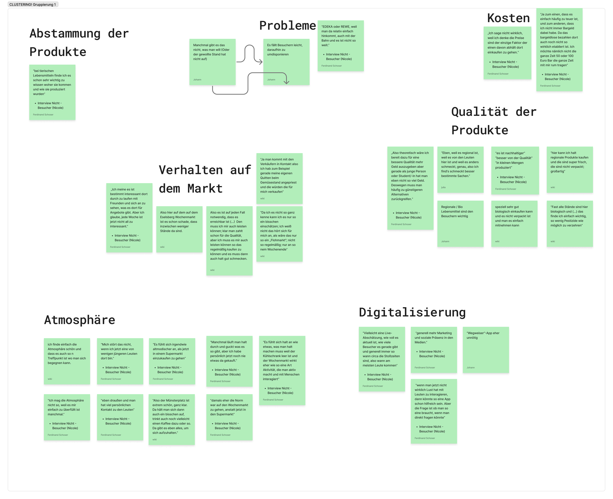
24.10.26 10:00
Julia and Johann went on the farmers market and interviewed three more people and made appointments with two sales person.
28.10.26 10:00
Julia and Ferdinand went on the farmers market and interviewed two more visitors and made appointments with two more sales persons.
29.10.26 16:00
Ferdinand overhauled the Interview Questions for our Interview with "Dörrmeister" at the
Farmersmarket on the Münsterplatz on the 4th of Novemeber 2026 to have a better and more informative
interview.
Julia overhauled the Interview Questions for our Interview with "Burgpilz" at the Farmersmarket on
the
Münsterplatz on the 4th of Novemeber 2026 to have a better and more informative interview.
Wiktoria overhauled the Interview Questions for our Interview with "Lauras Obst & Gemüse" at the
Farmersmarket on the Münsterplatz on the 31st of October 2026 to have a better and more informative
interview.
30.10.26 14:30
Worked on a set of interview questions for the upcoming Interview with the "Zopp" sales person.
03.11.26 14:30
Updated diary layout and optimized the styling by implement a scrollbar gutter so the page doesnt
jump when opening a section.
Transcribed and added two more interviews.
03.11.26 15:00
Added two transcribed Interviews from the 28th of October 2026 with market visitors.
Added the own solutions for scripts tasks: Eight Seconds Later (from 05a - Wanting and Motivation);
What Keeps You Doing It (from 05b - Reward, Belonging and Autonomy).
Overhauled the previous Text-Interface of Script Tasks from "Ferdinand Schoser".
Worked on the Script Tasks, on which we work as a group for these two: Exercise: In And Out (from 08
-
Defining Problems and Solutions) and Exercise: An Object Map (from 04b - Models, States and Errors)
in relation to our group project (WebApp)
03.11.26 14:00
Added transcript of the Dörrmeister interview, from 03.11.26
04.11.26 12:00
Everyone is currently working on transcribing and analysing interviews, and tasks from the script.
Here's the current state of our Figma board (Lowkey we only just remembered to start taking
screenshots to document the progress):
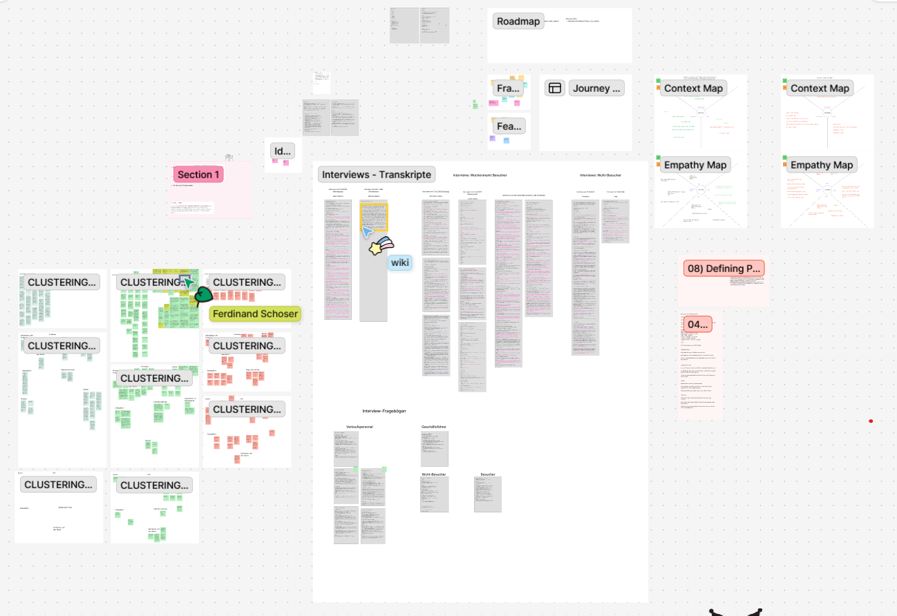
04.11.2026 ~10:00-17:00
On the 4th of November 2026 Julia Schön, Wiktoria Janczyk, Johann Sappler and Ferdinand Schoser started
working on the presentation for the 11th of November (STL in Interactiondesign 1)
Julia Schön transcribed her Interview with Dörrmeister at the Ulmer Wochenmarkt form the earlier
in the morning.
Ferdinand Schoser and Wiktoria Janczyk clustered the important quotes form every interview into fitting
groups inside of the topic (marketseller, market-visitor and market-non-visitor) and arranged them in three
different ways total.
Johann Sappler started building the general layout of the presentation (STL in Interaction Design 1 (11.11.2026)
05.11.2026 ~16:00-20:00
At 4pm on the 5th of November 2026 all four group members met with each other to continue
working on the presenation and different exercises from Interaction Design 1:
Ferdinand Schoser created the so called “Journey Map” about an imaginery person, that uses our
Web-App during a fitting situation. He also collected a lot of problems, that the people said during
the interviews and listed them up. After that he thought of possible solutions, that might fix these
problems. Later he revised the questions form the beginning/briefing.
Julia Schön & Wiktoria Janczyk worked on the evalutation and the insights of the interviews, which were
held a few days before. They pointed out the most important quotes, that people said and wrote down the
general insights we got form each person that might be helpful for our continuing journey.
Johann Sappler phone called a person for “Ulm Messe” that is responsible for the media and marketing and asked
about an interview. After that he worked on an E-Mail for that person, which included the short briefing and
date of the interview. Later he optimized the layout for the presentation.
07.11.2026 ~14:00-17:00
Ferdinand Schoser worked on the presentation by adding multiple slides form topics, that were beeing
discussed before. He added: the briefing questions, the collection of questions for the interviewed people,
journey map and what our project does/does’nt and why.
Julia Schön und Wiktoria Janczyk added the interviews themselves including their insights, the different
clusters about quotes from the interview, the empathy map, context map and object map into the presentation.
08.11.2026 (no certain daytime)
Wiktoria Janczyk and Julia Schön worked on the optimization and translation of different slides inside
of the presentation and also added new slides.
09.11.2026 ~19:00-23:00
Ferdinand reworked the layout for some slides (interviews) on the presentation and added new revised
answers for the briefing questions. He also translated different exercises, which were in english language before.
Julia schön added a lightning demo into the presentation and described it.
She also optimized various slides on the presentation.
Wiktoria Janzcyk also continued working on the presentation and optimizing or translating certain slides.
10.11.2026 ~12:00-17:00
Ferdinand Schoser optimized the quotes form the interviews by changing the type form regular to bold to
enhance the importance of certain statements. He also added his own photogrpahs form the farmers market
at the “Münsterplatz” for the findings wall. Generally he also optimized various slides in the presentation
for the contribution on the 11.11.2026 (Interaction Design 1 - STL) He also added multiple dates into the
diary. (04.11.2026-10.11.2026)
Wiktoria Janzcyk transtaled the empathy map into german language and optimized the presenation.
She also retook the screenshots form the clustering in higher quality so they are more readable.
Johann Sappler added another lightning demo into the presentation and included his own photography of the
farmers-market at Eselsberg into the findings wall.
At noon, we finished the presentation and uploaded it before 18:00.
6.10.2026
10:53
Script-tasks: Wiktoria
01a - Attention and the Wandering Mind
- When I pull out my phone:
- When a message comes in and I notice it
- On the train when I have nothing to do
- When I want to change my music
- When I have nothing else to do
- During short breaks, e.g. at the gym between exercises
Conclusion: Mostly it’s just because I’m bored.
Only messages and music are concrete reasons, the rest is idle time I fill with my phone.
01b - Designing around Attention
Pinterest: Where work gets pushed onto me
Screen: Saving pins and creating/cleaning up boards
What I have to do as a user:
- Decide for every pin which board it belongs in
- Remember which boards I even have (with many boards, it’s a long list to scroll through)
- Create and name new boards myself when nothing fits
- Clean everything up by hand later: move pins, find duplicates, delete old stuff
- Remember where I saved something so I can find it again
Who pays the effort? Me.
What it would have cost Pinterest to solve it differently:
- Automatic board suggestions when saving (they already have the tech for this because of the
feed)
- Duplicate detection
- Multi-select and sorting tools for cleaning up
- That would be development effort, but not a big deal
Why it’s probably still like this (my guess):
- Sorting and cleaning up keeps me in the app longer, and that counts as engagement
- Pins that I sort myself give Pinterest better data about what I like
- Cleanup features don’t produce numbers that look good in a team report
Conclusion: Part of the designer’s work became my work, because it’s cheaper or more useful for
Pinterest than solving it for me.
02a - Abstraction and Grouping
Blur Test Results: „Portfolio Website“
„Projects“-Page:
Intended:
- Images read as dominant group
- Text descriptions grouped together
- Keywords as separate group
Recommendations:
- Date and category feel disconnected from the project -> Move date and category closer to project
title
- Horizontal layout could be reconsidered (text left, images right -> new layout: image on top;
description and
tags
below
„About Me“-Page:
Intended:
- „ZUR PERSON“ and text section works well
- Overall structure clear
Recommendations:
- Not enough spacing between sections (Education and Skills) -> increase spacing
- Skill categories not clearly distinguished from each other -> increase spacing between them
02b - Contrast, Convention and Metaphor
„Portfolio Website“ - Homescreen:
„Winner“: Large name has the primary attention
Could be quieter:
- „Studentin. Digital Media“ -> smaller or lighter color
- „Typografie, Layout“ -> smaller or lighter color
„About Me“-Page:
„Winner“: The „Über mich“ description should have primary attention
Could be quieter:
- „ZUR PERSON“ -> could be a little bit smaller
- „AUSBILDUNG & ERFAHRUNG“ and „KENNTNISSE“ -> reduce font size
03a - How Memory Works:
1.: Food Delivery Order:
Step 1: Restaurant selection
- User selects right place to order food
Step 2: Browsing; adding items
- User mentally calculates running total of prices to reach minimum order value
- -> Show live cart total (fixed at top)
Step 3: Multiple Variants
- User must remember which article has which variation when ordering multiple items
- → Display variants clearly in cart summary
Step 4: Cart review and changes
Step 5: Address Entry
- First-time users must recall complete address
- -> Save addresses, offer as defaults
Step 6: Payment selection
- User must choose payment method and remember details (prepare cash for change)
- -> Save default payment method, ask for confirmation only
Step 7: Delivery-Tracking
- User repeatedly checks app instead of being notified
- -> Send push notifications (order confirmed, preparing, on the way, arriving)
2.: Online Doctor Appointment Booking
Step 1: Doctor/Speciality Search
Step 2: Available Appointments
- User must remember and compare multiple appointment times by clicking back and forth
- -> display all available appointments in calendar overview on one page
Step 3: Reason for Appointment
- User must categorize symptoms correctly and is uncertain if their free text descriptions fits
- -> Provide predefined categories/checkboxes instead of free text input
Step 4: Personal Data Confirmation
Step 5: Insurance Info
- User must recall insurance number
- User must figure out: „Does my insurance cover it or do I have to pay privately?“ (Depending on
the
type of
appointment)
- -> save insurance data, allow photo of insurance card, clarify cost question
Step 6: Final Confirmation
03b - Mental Models and Learnability
chosen product: Spotify
- What I believe happens when I press the main button (The „play“-button): The song just starts
playing
- What actually happens: connection to Spotify’s servers is established - song is streamed - there
could
be a
short
delay while the song buffers - license check runs (Premium/Free) - Playback position syncs - song is
stored in
your
cache
chosen product: Gmail-App:
- What I believe happens when I press the main button (The „send E-mail“-button): The email gets
sent
- What actually happens: email is first moved to Outbox folder - It’s then uploaded to the mail
server
-The
server
processes it and sends it through various mail servers to the recipient - there could be delays
(slow
servers,
network unstable) - (email could fail: land in recipient’s spam folder, invalid address,..)
04a - Prediction and Surprise
My Lightphone-Design:
1.: Music-app:
- User sees playlist but unclear how to navigate to the „Now-Playing“ view
- Navigation between screens not clearly signaled
2.: Transport-App:
- Departures list looks static with no visual cues of interactivity
- User doesn’t know if entries are tappable or just informational
3.: Contacts/Messages:
- Contacts detail has „call“ and „message“ buttons
- Messages chat doesn’t have these buttons
- -> User expects consistent interaction patterns
1a)
-
Day 1, 2 and 3 :
- before going to bed
- before waking up and going to the toilet
- before doing this task
- after cleaning the house
- after washing the dishes
1b)
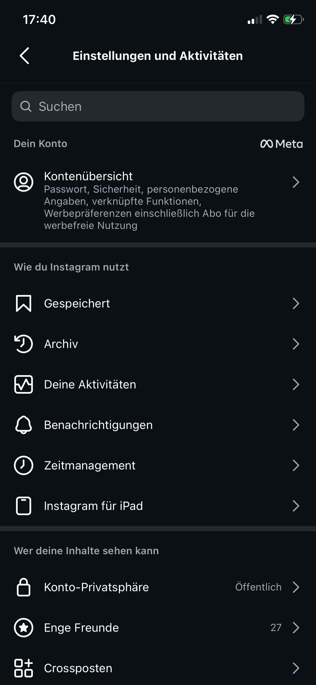
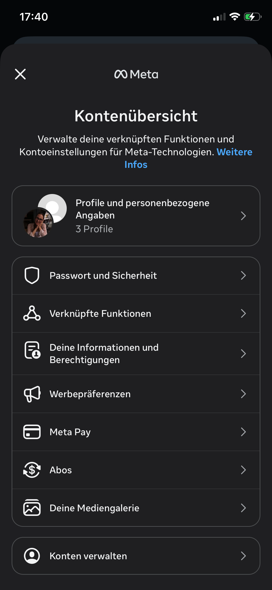
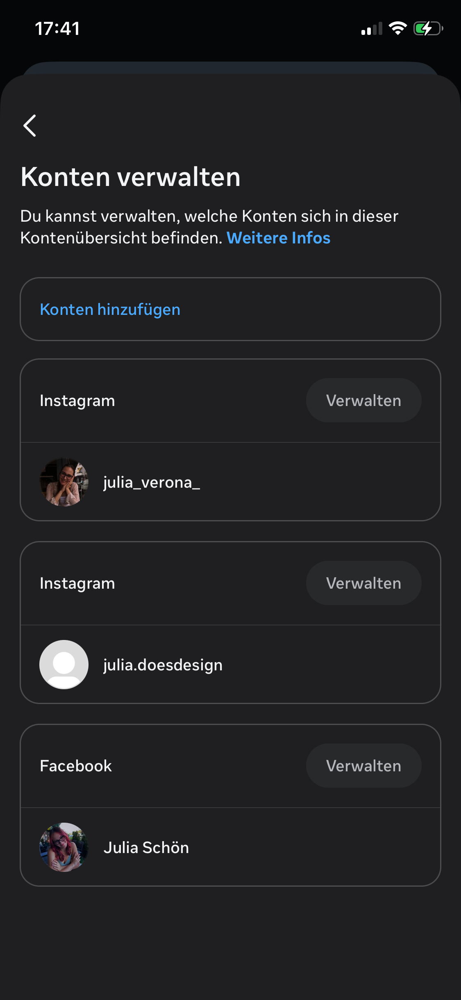
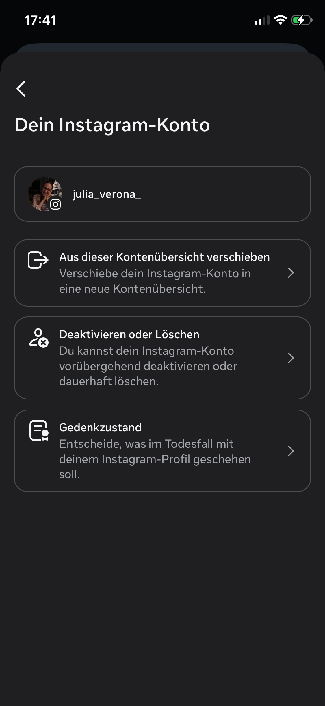
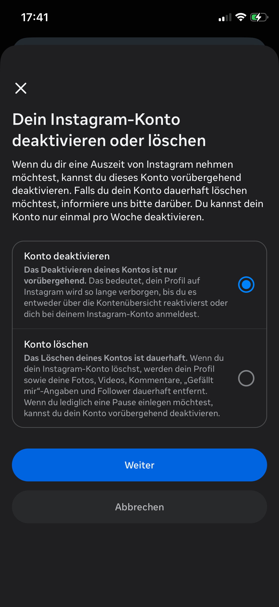
If you want to delete your account you first have to find your way through
five screens. If you want to create a new account you just have to scroll down
in the first screen.
2a) The Blur Test
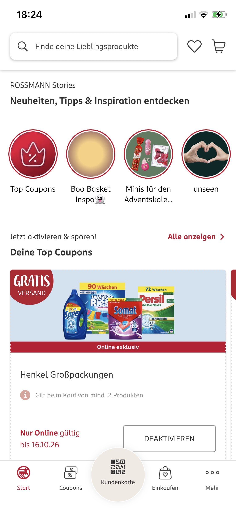
The groups I see with blur:
- the circles in the upper half of the screen
- a colorful square beneath
- at the bottom, five symbols, that are on the same line
- at the top of the four big circles is some text
- at the very top is another group with text
The groups I see sharply
- at the top: searchbar, favourite and card group
- then the four circles and a little title on top
- underneath is another group to show more
- then you come to the coupon section with a big picture and some text
- at the bottom is the menu group
2b) One Loud Thing
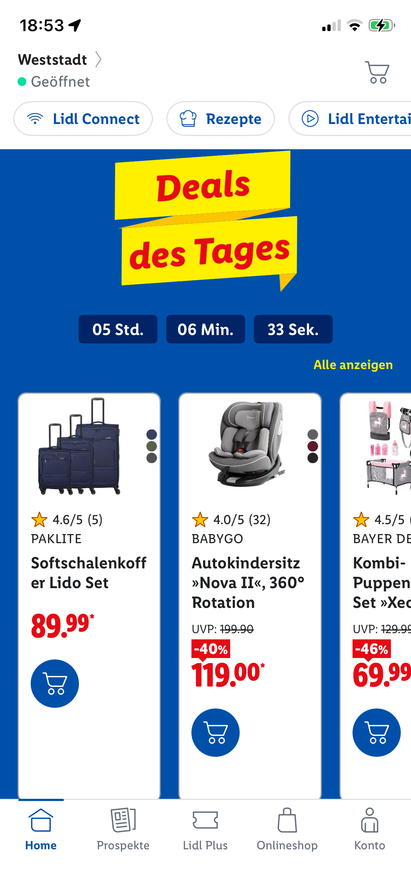
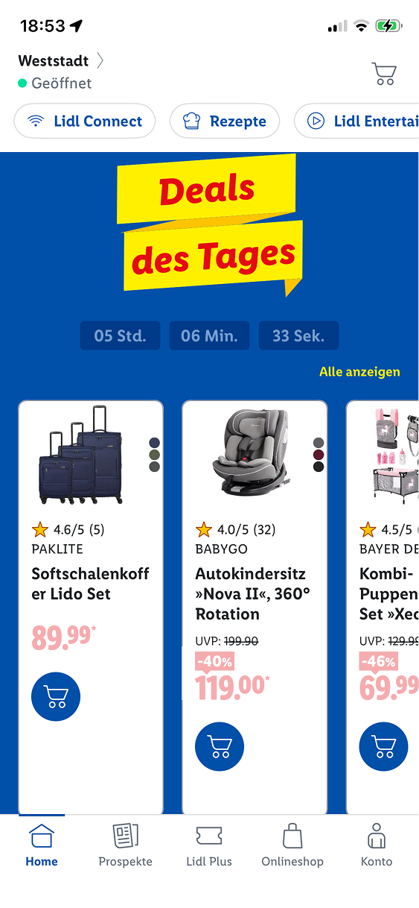
I turned down the the red pricing, because if your interested to buy, then you can take a closer
look of the prices.
Also I turned down the timer, because it was still competing with the title
3a) The Red Dots
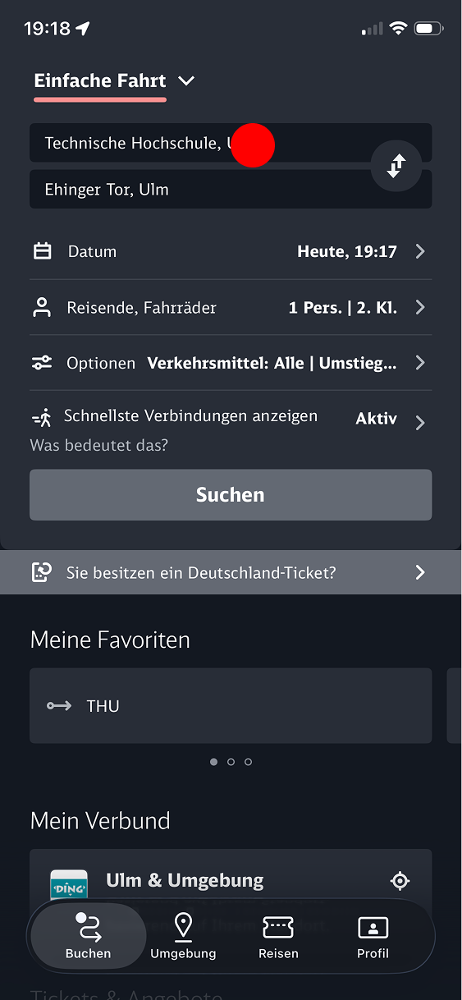
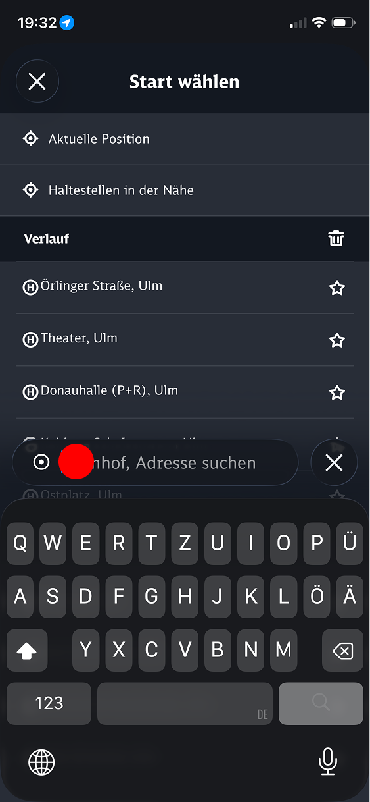
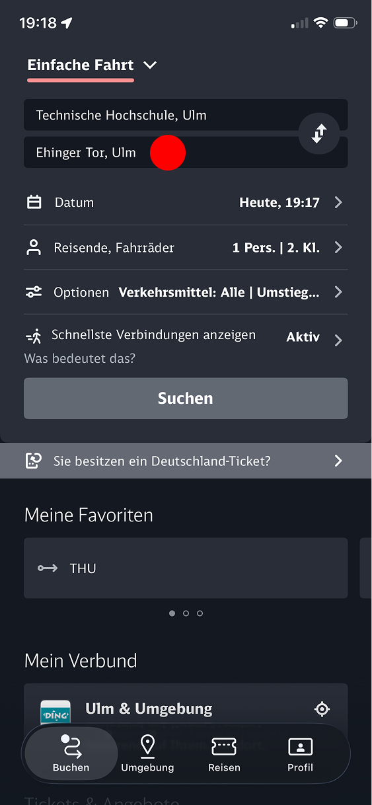
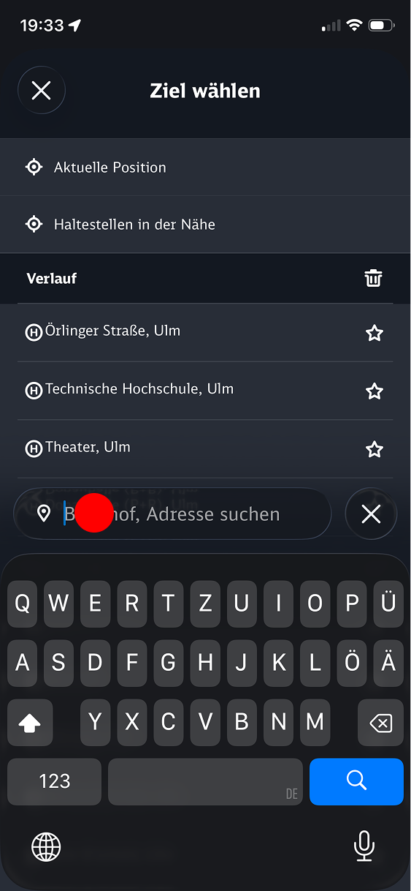
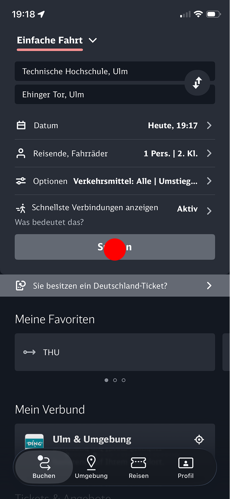
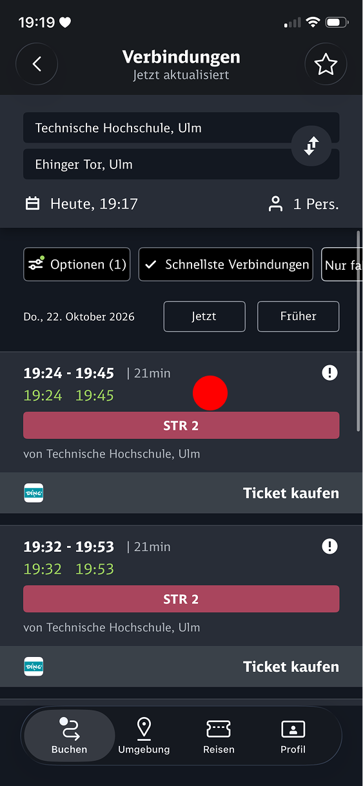
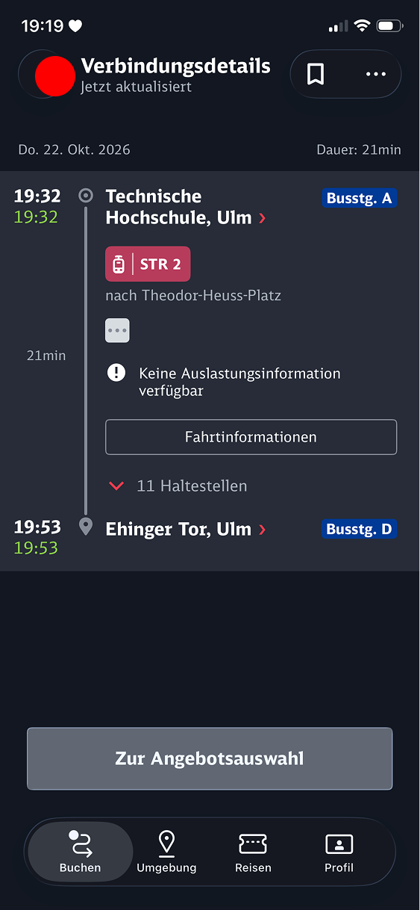
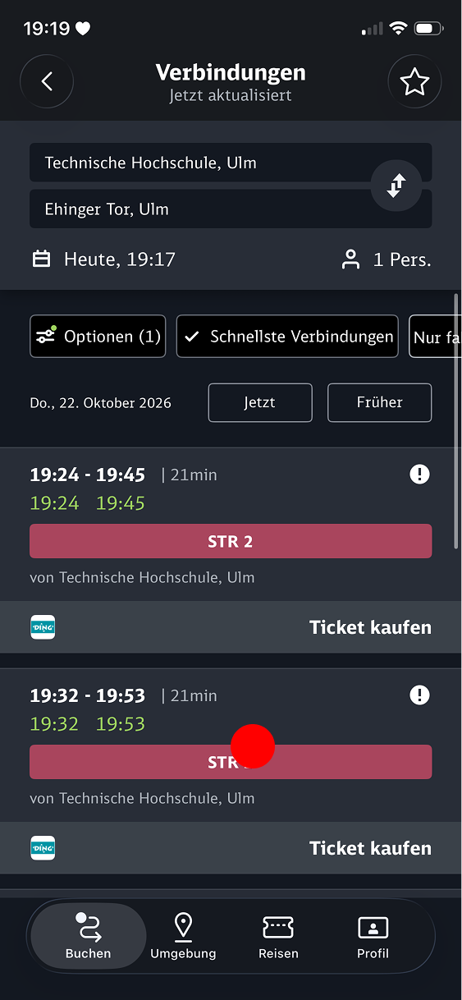
Users have to remember their starting location when entering their destination.
They also need to keep track of different departure times and train connections,
as there is no way to compare them directly.
While this example shows a relatively simple rail connection,
the process becomes increasingly frustrating when three or more trains
are required to reach the destination. Remembering all the different connections
and transfer times can be challenging, especially when a train is delayed or cancelled.
If a train is delayed or cancelled, the app should notify the user immediately and
suggest alternative connections. Instead of having to search for a new route manually,
users should be able to understand how the disruption affects their journey and what their
next steps should be.
Additionally users should be able to compare and to see departure and arrival times, journey
duration,
number of transfers, and potential delays at a glance.
3b) Your Own Model
- I use Spotify often
- In my understanding the main button is, when you start playing music. Thats why I think when I press start, the music starts playing, the icon I just clicked changes and the music will stop when I press the same button again.
- When you press the start button, not only the the music starts playing and the button chanegs to a stop icon, but also the progress bar starts moving
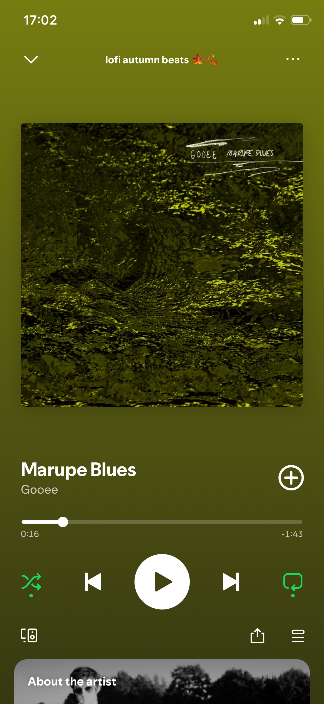
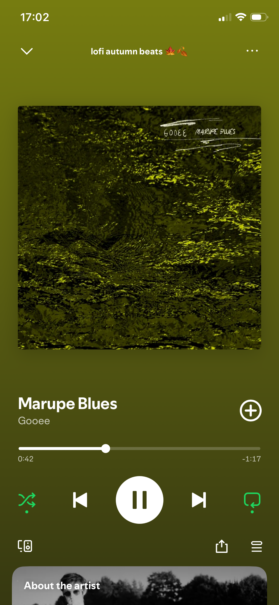
4a)
4b)
[06.10.2026, 12:30 - Ferdinand Schoser]
Here are different answers of the few exercises form the script over the last few chapters by
me
[06.10.2026, 12:45 - Ferdinand Schoser]
Exercise: What YoU Left [01a - Attention and the Wandering Mind]
Most of the time when I‘m outside I carry my phone in my pocket. So when reaching for my phone it is mostly because I remembered that I have my phone with me. Before that I‘m mostly just walking, talking to someone or listening to music. Then suddenly a thought appears, that wants to know something, like researching a specific thing on the internet or checking my messages.
[06.10.2026, 12:55 - Ferdinand Schoser]
Exercise: Effort Moved Onto You [01b - Designing Around Attention]
I use Spotify daily and I think the effort, that has been moved onto me is probably organizing my own library and playlists.
[06.10.2026, 13:15 - Ferdinand Schoser]
Exercise: The Blur Test [02a - Abstraction and Grouping]
Because we don‘t have a design yet, I chose the navigator screen of my Figma project from summer-semester 2026. While blurring my eyes I could still seperate each elements from each other. For example the the of the app in the top left corner, the „from-to“ formular in which you can select destinations, the date, time and person list and the big search button on the middle bottom. Of course there is still the app navigation on the bottom of the screen, which can also be seen as a seperate element.
[06.10.2026, 13:30 - Ferdinand Schoser]
Exercise: One Loud Thing [02b - Contrast, Convention and Metaphor]
I chose a poster we designed in Media-Design and Typography. At first glance the text is obviously fighting for dominance. The attention snaps immediately onto the date, that is shown on the poster and the name of the exhibition. Yet there is a higher contrast on the text of the heading, because the text color is white and the background color is grey. On the text of the date , the background color is in a slightly lighter grey tone and the text color is also white. So I would say the name of the exhibition grabs the attention more due to the contrast.
[06.10.2025, 13:35 - Ferdinand Schoser]
Exercise: The Red Dots [03a - How Memory Works]
I didn‘t get how i should master the exercise.
[06.10.2026, 13:40 - Ferdinand Schoser]
Exercise: Your Own Model [03b - Mental Models and Learnability]
I use Spotify again as an example because I use it almost daily. On the far right of the bottom navigation there is a „Plus-Symbol“ that says „Create“ My initial thought would actually be, that i could create or upload music myself by pressing the button. Probably because it is the common thing on social media like Instagram, TikTok and others. By pressing the button you can create playlists, jams or mixes. Even with other people together.
[06.10.2026, 13:50 - Ferdinand Schoser]
Exercise: Collect Hesitations [04a - Prediction and Suprise]
I currently don‘t have someone with me, that I can show a product of mine. But I simulated it if someone would use my portfolio website for the first time. By just staring at the homepage or different pages of the website you wouldn‘t actually know where the clickable buttons are. Only by hovering over them you can see a change on the pointer, and the text turns into a much lighter variant compared to before (and it also starts jumping up). I think this would definitely be a moment, where the person trying out the website would hesitate.
[03.11.2026, 12:10 - Ferdinand Schoser & other Group Members]
Exercise: An Object Map [04b - Models, States and Errors]
Listing everything our project will do:
- 1. inform costumers about what products are sold each time of the year
- 2. inform costumers about the location, that the products come from
- 3. advertising the farmers market as a hot spot for people to meet
Listing everything our project won‘t do:
- 1. show the prices of the products
- 2. selling products online
- 3. just show cold data
-...
Sentence each why not:
- 1a We won‘t show the prices of the different products, because they can change and the interaction between costumer and reseller should be talkative.
- 2a We won‘t sell goods online, because the farmers market is all about that human interaction at the location it self.
- 3a We won‘t just show plane cold data about opening hours, etc. because we want our Web-App to feel human and inviting.
(This exercise is not finished yet, as we are still trying to work on solutions as a team, these are just the initial ideas we had about this tpic.)
[03.11.2026, 12:10 - Ferdinand Schoser]
Exercise: Eight Seconds Later [05a - Wanting and Motivation]
For two days each time you open an app without a clear reason, note the app and time:
This exercise is really hard for me, because I only have apps on my phone that serve a certain purpose or are used frequently. But if I have to think of an example that fits this it would probably be Instagram or a „Maps“ App (Apple Maps, Google Maps, Google Earth…) This falls into the category of opening an app without a clear reason because most of the time when opening Instagram it‘s just to „doomscroll“ without any purpose.Sometimes I open the app because I actually want so see something specific or check if my friends uploaded something or texted me. But most of the time there is no beneficial purpose rather than watching content on repeat, that I didn‘t even search for. For the different Maps App it‘s a different story. I mostly open them when I‘m bored, so I just scroll through different countries and look after cities that might interest me. Most of the time there is not really a purpose behind it.
About eight seconds after opening it, note how you feel: better, the same, or worse:
For Instagram I mostly feel the same but maybe a little bit dumber, because it is just watching content on repeat that contains no information what so ever, yet it also depends on the algorithm that i got into previously. Yet for the different map-apps I sometimes feel like I actually learn something at the moment or learned something. Nothing to crazy but it makes me feel better about the fact, that I opened the app without a reason at first.
At the end of the second day, mark the three apps with the largest gap between how much you wanted to open them and how you felt afterwards:
Due to the fact, that I only have two apps in mind, I can only evaluate the two. I would say the biggest gap exists between the map-apps because it starts with opening the app without any reason and evolves into actually learning something about the population or monumentales, parks, stores of certain cities. For Instagram it‘s kind of complex because on the other hand you are being fed with content you didn‘t even want to see, yet on the other hand it‘s also possible that you come across videos or posts, out of which you can source useful information. It really depends on the algorithm.
[03.11.2026, 12:10 - Ferdinand Schoser]
Exercise: What Keeps You Doing It [05b - Reward, Belonging and Autonomy]
Choose one thing you do that nobody rewards you for:
Before going to bed or leaving the house I always check if the power outlets are unplugged, the faucet is turned off or not leaking and if the door is locked.
Write three sentences:
What you do:
Late at evenings, when everyone else is already asleep I always check, if the power outlets are unplugged, the faucet is turned off or not leaking and if the door is locked. How long have you done it:
Probably for the last 3-4 years and even more frequently since i moved out of my parents house what keeps you doing it:
Probably the fact, that im afraid of the possible consequences of forgetting to turn off the faucet, which is firstly wasting lots of water and secondly very expensive. In terms of electronic devices I also unplug them because of the electricity costs in „stand-by“ but I‘m also often concerned, that a broken device or power outlets in might create heat or even a fire. And locking the door is probably self explaining
Mark which one of the three needs from 05a your answer contains:
getting better
other people
your own choice
Probably because it is my own choice to control if everything is fine before going to bed or leaving the house, but also because of other people. I don‘t want them to pay the consequences for small mistakes, if I can be there to avoid it.
[03.11.2026, 12:10 - Ferdinand Schoser & other Group Members]
Exercise: In And Out [08 - Defining Problems & Solutions]
Objects/Nouns:
City, Market, Opening Hours, Products, Sellers, Costumers, Location, Notification, Local, Waiting-Line, Friends, Changing Sortiment, Access…
Related Objects with Verbs:
Location <- (inform, walk) -> City, Market
Costumer <- (buy) -> Products
Seller <- (show) -> Products, Costumer
Opening Hours <- (inform) -> Costumer
Seller <- (talk) -> Costumer
Costumer <- (waiting) -> Line, Market
Costumer <- (meeting) -> Friends
Changing Sortiment <- (inform) -> Costumers
Verbs:
inform, show, walk, talk, buy, waiting, meeting…
Changing Sortiment:
different products are sold in different times of the year
Fails: People don‘t know what exact food is sold in a certain time of the year.
Affects: Costumers that don‘t know much about which products are sold in each time of the year.
Opening Hours/Access:
the markets in Ulm are on certain days of the week with different opening times.
Fails: People don‘t know when and where the farmers markets are (not in relation to Farmers Market at the Ulmer Münster)
Affects: Costumers that thought about visiting the market but don‘t know when they are exactly.
Location:
determines where the Farmers Market is located.
Fails: People don‘t know if they can reach the Farmers Market by Public Transportation or if there are any parking lots.
Affects: Costumers that are relying on public transportation or their car.
Waiting-Line:
People have to wait at certain market stalls because there are to many costumers
Fails: To inform people where and when there are the most costumers at each time of the day.
Affects: Costumers that only wanted to stop by for a short time, and now they have to wait multiple minutes.
(This exercise is not finished yet, as we are still trying to work on solutions as a team, these are just the initial ideas we had about this tpic.)
06.10, 16:00
Author: Johann
Phone usage:
I noticed that most often I would take out my phone to:
- Check my messages
- Note down a thought or task for later
- start listening to or control my music.
What I was doing at those moments was mostly either idle time (Like waiting for the bus or being in
an
elevator),
when I was bored with my current task or activity, or when taking a break or eating.
Effort moved onto the user:
An instance of this happening is with the Google Keep app. It used to be so that you could write a
note
and instantly set a reminder for that note from the note creation screen.
Now, you need to leave the note editing screen, long-press the note you've just made, and then
select
the "set notification" button. They likely optimized for interface complexity with this move,
as hiding the button behind the secondary long-press action makes the primary note creation screen
simpler, at the expense of users who often use the reminder feature.
03.11.26 13:30 - Eight seconds later
Did the excercise intermittently as I often forgot the task when checking my phone.
Overall, my biggest observation is that I would often open the YouTube app just to scroll down the
list of recommendations for a while.
In that sense, I had a strong "Want" to open the app and find something pleasant to watch, only to
find myself in a desperate search for good content
among a sea of slop! I would then often to proceed to close the app, having watched nothing.
13:40 - What keeps you doing it
1. Taking photographs
2. I like taking photos with my camera, especially on any kind of outing or vacation with friends or
family. I've been doing this for about a year.
The reasons I keep doing it is because I enjoy the act of preserving memories, trying to find good
subjects or compositions and taking pictures of friends and showing them later.
I also like to think I'm developing my eye for Photography and bettering my own skills.
Therefore, I'm touching on all three needs: Getting better, other people, your own choice.
15.10.26 17:00
We also conducted an interview with a market stall operator, namely from the stall "Platzmetzger Kühle". However, the stall owner did not consent to us making an audio recording of the interview, which is wy we only took rough notes of her answers.
Seit 30 Jahren
Verkaufe in der Stadt (Münsterplatz) und Söflingen
Aufwand hält sich in Grenzen wegen Wagen
Sortiment:
Wurst, Fleisch; regional; Chef kennt seine Bauern
Schweine aus Wiblingen
Hauptgrund für Supermarkt
Supermarkt: manche Sachen günstiger
Kundenkreis
Bunt gemischt, jung bis alt
Saison
Sommer: viele Grill-Artikel, Fertigartikel
Infos für Kunden
Hauptsächlich im Internet auf Website
Schönstes an Wochenmarkt
Die meisten Menschen sind entspannt, nicht so lange warten
Mitgeben
Das sie genau schauen, was sie essen, wo es herkommt; Fake „regionale“ Produkte
03.11.2026 16:00
Wiktoria transcribed the Interview by Juila and Wiktoria with a salesperson called: "Lauras Obst
& Gemüse" they met at the Farmers Market at Münsterplatz,
Ulm on the 31st of October 2026 (31.10.2026). As we are trying to interview different people
such as the sellers, the regular visitors
and (young) people that never visit the Farmers Markets, the interviewed person fits into the
third category perfectly.
As we progress in the Interview we find out more about the reasons, why the people sell their
products at the Farmers Market in Ulm and what
they think about it. Across the Interview there is specific amount of interview questions, that
treat differrent topics.
This Interview is in german language and was recorded on the 31st of October 2026 (31.10.2026)
Coming up next is the transcribed interview it self in it's full length.
Interview: Stand “Lauras Obst (Münsterplatz, 31.10.26)
Julia: Kannst du deinen Betrieb kurz vorstellen?
Lauras Obst & Gemüse: Ja, mein Betrieb heißt Lauras Obst und Gemüse und wir haben eigene Kartoffeln
aus eigenem Anbau,
haben Bio-Gemüse, Bio-Obst, vorwiegend Bio und unbehandelt.
Julia: Woher kommst du und wie bist du zum Verkauf auf den Wochenmarkt gekommen?
Lauras Obst & Gemüse: Wir kommen aus Burlafingen und meine Eltern machen das schon seit mehreren
Generationen, deswegen
habe ich es auch angefangen.
Julia: Seit wann verkaufst du auf den Ulmer Wochenmarkt?
Lauras Obst & Gemüse: Im März ist es im fünften Jahr, also viereinhalb Jahre bin ich jetzt schon
hier.
Julia: Okay, krass. Und auf welchen Standorten kann man dich antreffen?
Lauras Obst & Gemüse: Dienstags in der Weststadt, mittwochs auf dem Münsterplatz, freitags
Söflingen, Samstag Weißenhorn und Münsterplatz.
Julia: Ah, okay, okay, dann ganz schön viel.
Lauras Obst & Gemüse: Mittlerweile schon, ja, aber es wird langsam.
Julia: Wie unterscheiden sich die Wochenmärkte?
Lauras Obst & Gemüse: Auf dem Land merkst du, dass die Leute richtige Wocheneinkäufe machen. Also
die kaufen wirklich
einmal alles querbeet durch und in der Stadt immer so bisschen kleinere Mengen, aber klar, die
können
die halt auch viermal in der Woche einkaufen gehen. Da merkst du halt, dass die immer wieder dann
kommen.
Aber das ist schon so der große Unterschied. Die ländlichen Regionen nehmen noch viel mehr regional
und
viel saisonaler, sag ich jetzt mal. Und in der Stadt, klar, die nehmen halt alles bisschen
kunterbunt durch. Ja.
Julia: Wie sieht so ein typischer Markttag für dich aus?
Lauras Obst & Gemüse: Wir fangen morgens an, das Auto einzuladen, so um halb fünf ungefähr. Und dann
fahren wir auf die Wochenmärkte,
nach Weißenhorn unter Tierheim zum Beispiel, bauen dann auf, so von sechs bis acht. Und dann startet
der Verkauf,
der geht hier bis um 13 Uhr und dann sind wir zum Abbauen 14 Uhr fertig, fahren wir heim, ausladen
und dann Restemarkt
noch, damit nichts übrig bleibt, haben wir samstags einfach noch so einen Restemarkt, wo alles, was
auf dem Markt war,
#quasi günstig hergegeben wird.
Julia: Was umfasst dein Sortiment und wie verändert es sich im Laufe der Jahreszeiten?
B: Wir haben viel regional, ich habe viel von der Gärtnerin aus Stuttgart und von den Gärtnern hier
drumherum einfach so Tomaten,
Gurken, dass es einfach deutsch ist, solange es das einfach gibt. Und wir schauen schon, dass es
jetzt dann halt
irgendwann dann mal keine Tomaten oder nicht mehr so viele auf dem Markt gibt, sondern dann halt
eher Wirsing und
Blumenkohl grad, was halt so gibt. Am Obst eigentlich alles, weniger Exoten, also so Mango und
Ananas, aber jetzt
nicht unbedingt Papaya oder irgendwas. Also schon mehr so die normalen Sachen: Clemis, Orangen,
Bananen, Zwetschgen,
Kirschen, so die Richtung, genau.
Julia: Was wäre so dein Lieblingsprodukt hier?
Lauras Obst & Gemüse: Aktuell sind es die Kissabel Äpfel, das sind welche, wo so ganz pink innen
sind, weil die einfach an sich was
Besonderes sind und vom Geschmack ist es, das kann ich nicht vergleichen, das ist eine Mischung aus
Erdbeeren und
Apfel, das ist ganz verrückt, wirklich. Aber sonst Trauben, Trauben und Brokkoli, ja. Okay.
Julia: Hättest du da irgendein Gericht, was man so damit gut zubereiten könnte?
Lauras Obst & Gemüse: Also mit dem Kissabel zum Beispiel würde ich jetzt Mus machen, weil es einfach
von der Farbe ist mit super pink,
ist auch geschmacklich richtig gut süß-sauer. Oder was auch richtig gut geht, ist Bratapfel mit dem.
Das geht auch
sehr gut.
Julia: Okay. Und so die, ich sag mal etwas so, so was wie die Ananas, wo kommt die dann genau
her?
Lauras Obst & Gemüse: Costa Rica. Ananas sind meistens Costa Rica. Mangos, Peru, Spanien gibt es ab
und zu, aber Mangos meistens Peru
tatsächlich. Also die Exoten.
Julia: Okay. Und wie wichtig ist dir dabei, wo die Ware herkommt.
Lauras Obst & Gemüse: Schon sehr. Wir achten schon sehr drauf. Also gerade beim Gemüse finde ich es.
Dann habe ich lieber eine
unbehandelte Gurke momentan, die aus Deutschland kommt, wie jetzt eine spanische Bio-Gurke. Klar,
irgendwann
gibt es nur noch Spanien dann, wenn die Zeit vorbei ist. Aber solange es geht, versuchen wir schon
alles regional
zu halten. Beim Obst in Deutschland wächst ja jetzt nicht so viel, aber da schauen wir halt bei
Clemis, dass wir
Italien haben und jetzt nicht unbedingt Spanien.
Julia: Und wie würdest du dann dementsprechend so den Unterschied zwischen regionaler und
importierter Ware nennen?
Lauras Obst & Gemüse: Ja, es ist schwierig zu sagen, weil es gibt Sachen, die einfach besser sind,
wenn du sie vom Ausland hast.
Zum Beispiel Pfirsiche, bestes Beispiel. Deutsche Pfirsiche schmecken einfach lange nicht so gut wie
italienische.
Das ist einfach, da ist ein anderes Klima, die haben mehr Sorten. Ihr wisst selber, hier hat es halt
nicht oft
30 Grad, Italien ist das halt Standard. Da sind einfach die Sorten auch ein bisschen besser. Klar,
nicht bei
allen Produkten, du merkst es nicht bei allem, aber so bei Obst ist es schon so, dass die
Hauptanbaugebiete einfach
bessere Sachen haben. Das ist schon so.
Julia: Okay, okay. Verkaufst du nur auf dem Wochenmarkt oder kann man deine Produkte auch woanders
erwerben?
Lauras Obst & Gemüse: Nur auf dem Wochenmarkt. Wir beliefern noch Firmen und Gastros, aber so für
Privatkunden aktuell nur auf dem Wochenmarkt.
Julia: Was denkst du, warum viele Menschen, obwohl es so ein großes regionales Angebot gibt, oft
trotzdem in die Supermärkte einkaufen gehen.
Lauras Obst & Gemüse: Ich glaube, viele denken, dass es viel teurer ist auf dem Wochenmarkt. Was
meiner Meinung nach nicht stimmt,
zumindest im Bio-Bereich nicht. Paprika und Bio sind genauso teuer wie auf dem Wochenmarkt,
teilweise teurer.
Das ist sehr in den Köpfen verankert von den Leuten, dass es teurer ist. Vielleicht auch bei manchen
das Hinfahren.
Du kannst hier im Parkhaus parken, musst alles zum Parkhaus tragen. Beim Supermarkt parkst du auf
dem Parkplatz und
kannst in einem Laden alles holen. Aber ich glaube, die, die auf dem Markt einkaufen, die gehen aus
Überzeugung auf
den Markt. Und es ist ja, ich glaube, in Deutschland sind es wenig, wenig Prozent, die auf dem
Wochenmarkt einkaufen.
Aber es ist schon ein bisschen auch die Gewohnheit von den Leuten.
Julia: Kaufst du selbst auf dem Wochenmarkt ein, oder?
Lauras Obst & Gemüse: Ich kaufe alles auf dem Wochenmarkt. Das ist irgendwie, ja klar, ich habe auch
nicht die Zeit anders, aber auch so.
Ich habe halt irgendwie meine Stände. Metzger hole ich immer hier mein Zeug, beim Käsestand. Das
ist, ich glaube,
wenn du Wochenmarktgänger bist, kaufst du auch einfach hier dein Zeug. Es gibt ja alles, du kriegst
alles. Du kriegst
Milch, du kriegst Hahne. Also alles, was du brauchst, kriegst du hier. Das ist schon so.
Julia: Genau, hättest du vielleicht so ein, also bis auf den Apfelmus, ein geheimes Rezept oder so,
was man mit deinen Artikeln machen kann?
Lauras Obst & Gemüse: Boah, Apfeltarte. Apfeltarte auch sehr gut. Du machst einfach so einen
Mürbteig und dann machst du die ganz schmal
rein. Also schneide ich die ganz flach, legst die in einem Kreis aus, ein bisschen Walnüsse dazu,
ein bisschen Honig
drauf. Das ist sehr lecker. Was auch noch sonst gut schmeckt, ist mit Feige, also
Feigen-Apfel-Auflauf. Du machst die
Feige, die viertelst du, dann steckst du da diese Äpfel rein, machst auch wieder ein bisschen
Ahornsirup drüber in den
Backofen. Mit Feta. Mit Feta schmeckt gut. Ja. Mehr ess ich dann nicht. Boah, was geht sonst? Ich
weiß nicht. Gemüse.
Leute, ich bin echt nicht der Kocher. Ehrlich nicht, wirklich. Man muss sich ein anderes Gemüse
überlegen, was ich
überhaupt koche. Emma, sag mal ein Rezept mit den Kissabel Äpfeln?
Julia: Aber das passt schon.
Lauras Obst & Gemüse: Apfelzimtschnecken. Aber Apfelzimtschnecken wären auch gut.
Julia: okay, danke. Wie sieht so dein Kundenkreis aus?
Lauras Obst & Gemüse: Puh, jeder Markt unterschiedlich. In der Weststadt ist ganz krass, Weststadt
sind viele junge Familien.
Also vom Alter würde ich jetzt mal schätzen so um die 30, 40. Du hast hier in Ulm mittwochs ganz
viele ältere Menschen.
Tatsächlich. Klar, Mittwochvormittag sind meistens die Älteren, die Zeit haben. Freitags Söflingen
auch viele Junge
und samstags in Weißenhorn ist es sehr gemischt. Aber da würde ich mal sagen, Altersdurchschnitt
vielleicht auch so
40, 50. Jüngere sind eigentlich weniger auf dem Wochenmarkt. Es wird immer mehr, aber in unserem und
eurem Alter wenige.
Tatsächlich wenige. Also ich habe schon ein paar Einzelne, da sind es eher um die 30, 35, schätze
ich. Ist schon ein
bisschen gemischt da.
Julia: Du meintest grad so "immer mehr"?
Lauras Obst & Gemüse: Ja, ich glaube, es ist schon der Trend so. Ich glaube, es ist schon immer mehr
der Trend, dass sich die
Jungen bewusster ernähren und auch bewusster schauen, wo es herkommt. Mit Corona war es ganz krass,
da waren
viele Junge auf dem Markt. Dann hat es wieder super abgeflacht. Jetzt kommt es wieder immer mehr.
Ich sehe es
ja immer wieder. Die Älteren, vielleicht sterben sie auch weg. Aber es sind auch viele junge
Familien, die
mittlerweile wiederkommen. Aber klar, du hast auch mehr Angebote. In der Weststadt wohnen viele
junge Familien,
in Söflingen hinten. Du kommst überall super hin, mit Bahn und Bus eigentlich. Es ist schon so, dass
da tatsächlich
mehr Jüngere auch kommen.
Julia: Gibt es da auch zwischen den Saisons größere Unterschiede bei den Kunden oder ist es immer im
Herbst so wie im Sommer?
Lauras Obst & Gemüse: Sommer ist der beste Monat. Ja, da kommen die meisten Leute, weil es ist auch
wieder marktabhängig.
Manche Märkte sind wirklich so Schönwettermärkte, da kommen die Leute eher, wenn Schönwetter ist. Im
Winter
ist immer weniger los, immer schon so, wenn es glatt ist, dann kommen die älteren Menschen halt auch
nicht.
Wir sind jetzt hier in Ulm, ist ein bisschen schwierig zu sagen, weil wir dann auf einer anderen
Aufstellung sind.
Da hat jeder einen anderen Platz, da ist auch weniger los. Aber die kälteren Monate, wo es regnet
und schneit,
da ist schon wesentlich weniger los. Ist schon so.
Julia: Hast du schon mal versucht, mehr jüngere Menschen zu deinen Stand zu bringen.
Lauras Obst & Gemüse: Ja, wir machen viel Instagram, TikTok nicht so, aber wir machen viel
Instagram, viel Werbung tatsächlich mit
Social Media. Vielleicht bringt das auch was, kann auch sein, aber so die jüngeren Generationen
erreichst du glaube
ich tatsächlich nur über Social Media mittlerweile. An sich, wenn du arbeitest, du bist ja nicht
mehr in den
Studentenkreisen drin. Wobei doch meine Studenten, die bei mir arbeiten, muss ich auch sagen, machen
auch viel
Werbung. Tatsächlich in den Unis, da kommen dann schon auch von denen dann Studentinnen und
Studenten her,
das stimmt schon auch, aber ja, sonst Social Media machen wir viel Werbung.
Julia: Was macht ihr da so?
Lauras Obst & Gemüse: Reels, Stories, Posts. Wir machen Gutscheine, wir machen Quizze, alles
Mögliche, eigentlich so, dass
du die Kunden ein bisschen an deinen Standteil lockst, dass sie ein bisschen interagieren können,
ja.
Julia: Hat dich da auch schon jemand angesprochen?
Lauras Obst & Gemüse: Ja, vor allem, wenn du so Sachen hast, besondere Sachen oder wenn du Angebote
reinmachst, dann melden sich
auch viele. Das ist eine Zeit lang schon so gewesen, wenn du jede Woche reinschreibst, wir haben das
und das,
dass die Leute dann du merkst, die kommen gezielt deshalb. Die sagen, wir haben auf Instagram
gesehen,
das wollen wir haben. Es ist schon so, es bringt schon was.
Julia: Welche Informationen würdest du gerne Kunden wissen lassen? Bevor Sie den Stand besuchen.
Lauras Obst & Gemüse: Dass wir sehr regional sind, dass wir viel deutsches Zeug von Gärtnern hier
drumherum haben. Wir arbeiten viel
mit dem Blessing in Neu-Ulm zusammen. Das ist auch eine Gärtnerei. Wir arbeiten mit München Biberach
zusammen,
einfach. Dass es wichtig ist, dass wir auch wissen, wo es herkommt und dass wir wirklich alles
probieren.
Wir fahren zweimal, dreimal die Woche nach Stuttgart auf den Großmarkt, um Obst zu kaufen. Wir
probieren alles,
bevor wir es kaufen. Sie können sich sicher sein, dass die Sachen bei uns qualitativ einfach gut
sind. Also wenn
Sie es kaufen, es einfach gut schmeckt. Sie dürfen auch gerne alles probieren. Das dürfen Sie ja
auch immer machen.
Julia: Welche Fragen stellen den Kundinnen so am häufigsten?
Lauras Obst & Gemüse: Am häufigsten. Bei Kartoffeln zum Beispiel. Ich würde gerne Kartoffelsalat
machen. Welche Kartoffeln nehme ich?
Oder Äpfel. Wenn wir da acht, neun Sorten Äpfel dabei haben, welchen Apfel nehme ich zum Backen? Das
ist tatsächlich
was. Was kann ich zum Backen nehmen? Das ist auch eine der häufigsten Fragen oder welche Tomaten
schmecken gut?
Wir haben dann acht, neun Sorten im Sommer an verschiedenen Tomaten und welche Tomaten schmecken
einfach gut? Und
dann sage ich immer, probieren sie alle, weil jeder hat ja ein bisschen einen anderen Geschmack,
aber das ist schon
so. Die Fragen, was schmeckt am besten? Das ist so die meistgestellte Frage eigentlich.
Julia: Dann abschließend, was ist denn so das Schönste für dich am Wochenmarkt und was verbindest du
mit dem?
Lauras Obst & Gemüse: Boah, das ist eine gute Frage. Ich würde sagen, die Arbeit mit den Kunden.
Weil es ist schon was anderes.
Die sind alle freundlich auf dem Wochenmarkt, die wo einkaufen gehen, die wollen auch quatschen. Die
wollen
nicht einfach nur einkaufen gehen, sondern die wollen sich unterhalten. Die zeigen dir dann, was sie
gekocht
haben. Das ist ganz oft so, dass sie dann fragen, wie würden Sie das machen? Einfach dieser
Austausch, auch vor
allem mit älteren Menschen, dass du einfach, du kannst dir auch Tipps holen. Ich frag noch nicht,
wie kochen
Sie das eigentlich, wenn ich nicht weiß, was ich damit machen soll. Es ist schon so ein Stück
irgendwie wie
so eine Familie auf dem Wochenmarkt, würde ich sagen, weil du hast schon jede Woche die gleichen
Kunden.
Und du hast ein bisschen Teil am Leben von denen. Das ist schon sehr schön, weil wenn du dann
irgendwie
privat in der Stadt bist und die siehst, dann sagen sie auch immer alle Hallo. Das ist schon sehr
nett.
Julia: Und dann noch so Menschen, die zukünftig vielleicht auf den Markt kommen wollen. Was würden
Sie ihnen ans Herz legen?
Lauras Obst & Gemüse: Oh, puh. Dass sie sich auf neue Sachen einlassen, dass sie auch mal sich .
Wenn man jemandem was empfiehlt,
dass man was Neues probiert, wäre es oft so, auch wenn ich irgendwo durchlaufe, den Käse hab ich
noch nie gesehen.
Oder ich wusste nicht, dass es so einen Schinken gibt oder so einen Honig. Drüben, wenn Honig stand,
der hat 55 Sorten
Honig. So wusste ich nicht, dass es viele Sorten gibt. Dass sie sich da ein bisschen reinlaufen
lassen, ein bisschen
offen sein für neue Sachen. Dass sie da auch gerne an den Stand kommen und sich denken, jetzt nehm
ich mal was anderes
mit. Gefühl für Lebensmittel kriegt, so hey, es gibt auch was anderes Cooles außer Brokkoli zum
Beispiel. Ja, so sowas.
Julia: Ah, was mir noch eingefallen ist, so zwischen den Märkten, habt ihr da auch so, ja, du
kriegst einen Apfel umsonst, dann krieg ich was.
Lauras Obst & Gemüse: Ja, ja, wir haben das schon. Also es gibt so eine unausgesprochene Regel, dass
es immer Rabatt gibt bei denen,
die einkaufen und dass dann meistens so, keine Ahnung, wenn jetzt irgendeiner auch was; Eine
beliefert eine Gastro
zum Beispiel, und er hat gerade das nicht da, was die Gastro bestellt hat. Dann hilft mir jemand
aus. Oder wenn der
Metzger kommt, hast du 5 Kilo Kartoffeln? Jaja, passt, ich brauch da noch ein Fleisch. Das ist dann
schon so, dass
es untereinander sehr familiär läuft. Das ist auch sehr schön. Ja.
Julia: Danke für das Interview.
04.11.2026 14:00
Julia: Wie sind Sie zu diesem Stand gekommen?
Dörrmeister: Wir hatten letztes Jahr hier zehnjähriges Wochenmarkt-Jubiläum. Vor zehn Jahren war ich noch nicht dabei. Da stand ich noch genau gegenüber und habe ein anderes Produkt verkauft. Und habe gleich mit dem, hier den Gründer gestartet sozusagen. Damals war es noch ein 3 Meter Steckzelt und ein Drittel von der Ware sozusagen. Aber da der Trend immer mehr Richtung bewusste Ernährung ging und auch Nachhaltigkeit hat sich dieses Konzept hier manifestiert, also stark etabliert. Und dann haben wir dann natürlich, ich sage ja das ganze Sortiment, was hier auf dem Tisch liegt, hat sich hier gemeinschaftlich mit der Kundschaft in den letzten zehn Jahren entwickelt.
Immer mal wieder was ausprobiert hier, probieren wir dies, probier mal das und so. “Oh nee, das ist flopped” - dann weg damit. Jetzt stehen wir sozusagen mit diesem Sortiment hier in Ulm, mittlerweile auf sieben meter. In den letzten Jahren, also seit Pandemie, bin ich sozusagen direkt a, Anfang der Pandemie, bin hierher gewechselt, mit dem Ziel aus dem Dörrmeister, also... unsere Reichweite zu erweitern.
Und damals hatten wir 10 Märkte, mittlerweile haben wir 25 Märkte. Onlineshop, Gastro Kundschaft und gerade auch immer mehr Richtung den Studenten.
Städten auch noch mal wie Tübingen, Nürtingen stehen wir auch schon mittlerweile. Wir stehen in Stuttgart, in Esslingen und auch in Kirchheim und in Riedlingen, also die ganzen Biberach, die Hochschulen, Orte, Memmingen, Onlineshop wie gesagt; und dadurch konnte sich das alles entwickeln.
Wir haben dort immer mehr eine höhere Zirkulation der Ware, dadurch dass wir alles offen verkaufen und Chemikalienfrei haben wir natürlich eine weitaus bessere Qualität als alles was wir in dem Geschäft kriegen können, deshalb verköstigen wir intensiv,(...)
und dadurch dass wir ein eigenständiges Unternehmen sind und schon viele Jahre mit vielen Herstellern auch kooperieren haben wir auch ganz eigene Einkaufspreise; sprich wir können sozusagen mittlerweile und brauchen uns nicht vor Lidl verstecken oder von irgendwelchen Großkonzernen und haben dadurch trotz alle dem eine weitaus bessere Qualität und die Kunden kommen halt auch vermehrt mit eigenen Gefäßen, was natürlich auch ein Hauptbestandteil ist von dem Konzept;
dass wir da extrem viel Verpackungsmaterial sparen und einfach sehr viel nachhaltiger arbeiten, leben, glücklich sind und bei gleichem Preis-Leistungsverhältnis; also deshalb macht das im Moment extrem viel Spaß mit Dörr-Obst und -Nüssen.
Gerade jetzt auch zum Winter; auch mit Ingwer und so was. Jeder der hier mit ner Schnupfnase kommt kriegt erst mal Ingwer auf die Hand. Und gerade die ganzen Energietaler, die wir ja selber produzieren auf Dattelbasis, das ist ja auch für jeden Studenten, für jeden Sportler, für Eltern, ältere Herrschaften, die auf ihre Ernährung achten müssen. Und von klein auf an, also es geht eigentlich ab einem halben Jahr los. Und wir decken hier eigentlich alles ab bis zu den “la dolce Vita”, ins nächste Leben rüberreitest. Und daher macht es halt Spaß.
Allerdings ist es noch nicht ganz ohne, wie ihr sagt, was steht dahinter. Wir sind teilweise, also ich stehe fast jeden Tag um 4 Uhr auf. Wenn dann erstmal wir haben im Domautal unsere Zentale sind halt jeden Tag mehrfach unterwegs, müssen natürlich das Personalmanagement, das Warenmanagement, Verpackungsmanagement, der Fuhrpark muss stehen.
Wir müssen pünktlich sein. Wir müssten immer da sein wenn es geht ja im schlimmsten Fall. Und dann kommen wir jetzt auch noch die Weihnachtsmärkte noch dazu und die ganzen Feiertage, das heißt für uns, als Firma, ist jetzt Gott sei Dank nicht zu wenig zu tun. Im Sommer, wenn die Sommerferien sind, haben wir die höchste Wespenzeit und auch den wenigsten Umsatz. Und das ist halt auch das Interessante. Wir müssen halt jeden Tag bei den äußeren Bedingungen kämpfen. Heute ist es windig und kalt. Gestern war es heiß mit Wespen, und dann ist es auch einmal regnerisch und alles ist klitschnass.
Also dann muss man halt gucken, wie man einfach... Ich sage immer, es ist jeden Tag das Gleiche, aber immer anders.
Jetzt weiter. Mein nücher Paderwand, der liegt im Auto und pennt. Deswegen bin ich hier, also bin ich heute nicht alleine oder so. Jungen Leute. Also, wie geht es weiter?
Julia: Danke. Haben Sie so gewisse Empfehlungen oder Rezepte, die man mit ihren Produkten kochen, backen könnte?
Dörrmeister: Das ist auch wieder. Einfach perfekt für fast jede Küche. Ich habe hier asiatische Küchen, ich habe indische Küche, ich habe arabische Küche, die kommen an und kaufen sich für ihre... Also ich habe Gastronomiekonschaffung empfiehlt.
Gerade die Hochwertigkeit der Produkte und viele Sachen, die mit Nüsse sind. Berberitzen zum Beispiel, die kann man halt ins Müsli mit reinbacken, die kann ich in Salatwetten einmachen, aber idealerweise macht man die in Reis- und Fleischgerichte rein, als kleinen Vitaminenburschen. Gut hinten ist halt Schokoladenseite, da ist dann wieder Geschenke. Weil viele Leute kommen mittlerweile in der, jetzt ist ja die Keksbackzeit. Aber viele Leute backen gar nicht mehr, kommen dann mit den Keksdosen und machen sich dann zum Beispiel Verschenken sozusagen.
Auch hiermit mit dem Gebier getopft, das können wir bei Torten, bei Cupcakesbacken und Reihen so sehr sehr lieb. So, und weiter geht's hier für morgen.
Das ist der Müsli Mixer Teilung, nur weil die wir ja siehst, bringen die eigenen Gäste. Barsig ist noch mit der Orange. Müslis in der Kopsette, runde fertig mit diesen ganzen Superfoods.
Klar, für die Feshbarbox der Kinder nächstes Beispiel, dann gibt's diese Maracuja-Würfel, die Kokos, weil ich meine eigenen Töchter hier saß mangelt. Das ist ein absolutes Top Highlight, also Top 5 Produkt. Wie gesagt, jetzt im Moment verkaufen wir Ingwer übelsteuert, sowieso die ganze Woche, das ganze Jahr dattelt ihr. der Schwanger ist, der braucht Datteln. Und hier sind wir dann halt in der Süßabteilung. Und da wir früher immer die Dattel genommen haben, halbiert, kehrt raus, jede Hälfte eine Weile los rein, zweimal Frühstück, geiles Gemäck.
Haben wir dann gesagt, pass auf, wir machen diese Energietale ein und sind dann. Und das ist dann halt seit fünf Jahren, haben wir sechs Jahre mittlerweile, haben die Küche gebaut und verkaufen sie aus unserer eigenen Ware produzierten Sachen, sozusagen zuckerfrei. Und Das ist dann auch, wie gesagt, Sportler, Studenten für euch, für Eltern von klein auf, das ist ganz groß von daher. Brauchst du was für einen Darm aufzumachen? Hier, Zack, Pflaumel. Brauchste was für den Darm zuzumachen? Zack, Bio Bananen.
Also, wie sonst, man fühlt sich schon mit unter wie ein kleiner Schamade. Weil du lernst ja auch von vielen Kunden, hätte ich niemals gewusst, dass Maulbären und Fesales dem Blutzuckerspiegel besenkt. Diabetiker standkommt, weiß ich nicht, so lernt man halt was dazu. Ich hätte auch nicht gedacht, dass man damit (Zeigt auf Kokoswürfel) Hunde schützen kann vor Zecken. Auch wieder was gelernt. Durch Kokos Öl, das mögen Zecken scheinbar nicht. Viele schmieren ihre Hunde auch damit ein. Und hier ist es halt eingelegt in sich.
Das hatte ich euch gegen GM jetzt mal. Meine Frau isst kein Raffaelo mehr, sagt ihr. Das sind Kokos Raspel, die werden gepresst zu Würfeln. Und danach werden die eingelegt mit die eigenen Kokos Milch und Kokos öl. Guck mal, was die von Aroma produzieren. sind, sind patten süß, aber sind ohne Zucker. Das ist verrückt, ja schmeckt eigentlich. Wir gucken das auch so viel in das Schriezucker, wie möglich verzichten können. Klar. Haben wir manche Sachen, aber die sind dann auch, wie gesagt, durch das Sortiment ist ja ein Stand und so.
Also ich habe Leute, die kaufen das, aber es gibt immer noch die Alternative. Komplett Natur oder mit Zucker. Ja, komplett natur oder mit zucker. Komplette Natur oder mit Zucker, also jeden das sein kann.
Julia: Wo bezieht Sie ihre Ware her?
Dörrmeister: Aus der ganzen Welt. Wir sind ein absoluter Großhandel. Wir sind auch die lernte großen Außenhandler. Wie gesagt, hat sich ja etabliert. Da kann man so sagen, dass zum Beispiel die Hälfte der Lüße ist vom Equatorial, weder Süda-Werika oder Südafrika zum Beispiel, da wo man halt, da entwickeln die halt das größte Volumen und das meiste Aroma, größte Nährstoffe.
und dann wird es weltweit getestet, wo gibt es die beste Qualität? Wir wissen zum Beispiel, dass Aprikosen, Feigen, außer Türkei gibt es fast nichts besser. Diese Kokosflocken, zum Beispiel sind aus dem asiatischen Bereich. So kommt es, die Datteln sind aus Israel, die aus Tunesien, die sind aus Türkeien. Wie gesagt, der Saal ist teilweise, wenn die Erde gibt, ist auch aus der Erde. Südamerika, weil das ist groß, ein Volumen, die sind nicht nur einfach so ganz klein und sauer, sondern so richtig aromal, Überraschungseffekt.
Ein eigenes Kinoqis wäre hier zum Beispiel. Den kann man auch groß kommerziell gar nicht produzieren. Das ist jetzt die Gesalzenabein. Und zwar ist es an der Süd-Indische Pfefferspezialitäten.
Stattfamilien, Statttierische, Schädatine, guck mal was das machen. Und wenn du das jetzt auf kommerziell für Lidl oder so, das kann ich gar nicht bezahlen. Das sind so kleine Geheimnisse noch. Was noch dazu. Auf einem gefregenen Bock im Früchten wird der gerade. Deutschland, weit haben wir den besten Preis. 9,50 Euro, da kommt gar nichts mehr. Außer vielleicht Kubo oder so. Aber die sind dann auch aus China abgepackt von Wotzbo. Die sind aus Spanien, die besten von den Hälften, die sind sauber.
Julia: Wie würden Sie so regionale Produkte, was so importierte Ware unterschreiben?
Dörrmeister: Also ich persönlich bin auch regional. Klar, ich will ja meine Region unterstützen. Ich bin halt einer, der hat hier gibt es drei, vier Gemüsehändler, es gibt hier drei, vier Fleischhändlers. Der ist regional. Was soll ich da machen? So, wissen wir, wir haben halt mal mit einer Idee angefangen von Müsli. und hoffenfrüchte und daraus ist jetzt klar, dass wir sozusagen entstanden sind. Und regional ist halt unsere Eigenproduktion, die hat es vorher noch nicht gegeben. Und der Rest ist halt bei uns in dem Sinne als Großhandel.
Wir stehen halt für beste Qualität aus ganzer Welt zu tun.
Julia: Aus Ihrer Sicht, wie ist die generelle Stimmung auf dem Markt? Auch in Bezug auf die anderen Stände, verstehen Sie sich da alle gut?
Dörrmeister: Ja, Markt ist mega geil. Markt ist wie eine Familie. Selbst die, wo du nicht leiden kannst, die sind hart auf hart, sind die für einander da. Klar gibt es hier und da auch mal Keiffereien. Gerade wenn jetzt zum Beispiel so was wie die Spargel-Saison oder Erdbeer-Saisons, dann ist die Preise bei denen, ist dann wie die Börse, das kann tagtäglich sich änderen.
... und die sind sich schon alle miteinander abgesprochen, das nicht der eine, zum Beispiel diese drei Euro eine Schale anbietet, der andere für fünf Euro, weiß ich nicht. Da bin ich wieder fein raus. Ich bin da echt fein heraus aus viele Geschichten, ich habe hier keine Konkurrenz auch in dem Sinne. Ich sehe auch gar nicht. weil jeder Gemüsestand gibt es hier 5-6 Stück, aus was sollen die dann sagen? Also von daher, die Stimmung ist grundsätzlich gut, auch von der Kundschaft, klar die Kundschaft spiegelt immer ein bisschen die momentane Lage der Gesellschaft wieder, bei Corona waren sie natürlich alle ein bisschen übernfindlich und keine Ahnung, dann sind sie dann irgendwann...
Die fangen an, die so Alltagsgespräche zu rücken. Bildzeitungsplatitüden, Narrative. Dann wird ein bisschen drüber geschnackt. Die lassen dann zwei Minuten bei dir die Luft raus und gehen sie glücklich weiter. Das ist noch einfach mein Job. Die Leute sind zwei, drei, fünf Minuten bei mir. Die sollen mit dem Lächeln gehen. Wenn die mal schlecht drauf sind, ist ja nicht unbedingt meine SChuld. Das muss ich nicht persönlich geben. Aber grundsätzlich ist Wochenmarkt... Deswegen habe ich ja vor fünf Jahren dann Cocktail-Trip geblieben.
Das heißt nachts um 3, wenn einer dann zu viel Pegel hatte, dann hieß es dann... ...Gut zu! So, und das ist dann halt eine komplett andere Ebene hier. Du hast hier gutes Essen, gute Nahrungsmittel, gute Leute miteinander, schönes Miteinander. Hier ist noch sehr viel, wie es eigentlich sein sollte, Mensch nicht. Da gibt es nur mal 10 Euro zu viel raus, sagt der Kunde, oh, der Kinde gibt jetzt viel Geld. Dann gibt es das Ding zurück oder der vergisst das Ding, und die läuft nicht hinterher, weil er seine Sachen vergessen hat.
Klar gibt es auch so was die Bettelmafia. Es gibt verschiedene Märkte, da muss man halt auch aufpassen. Man muss auf jeden Fall aufpassen, dass du nicht beklaut wirst, von der ausgestehenden. Aber nicht wirklich vom Nachbarn, da ist eher weniger. In der Fall steht man dann mehr für einen da ein. Also das das angeht, ist die Stimmung auf dem Wochenmarkt Herzlich
Julia: Wie sieht Ihr Kundenkreis aus? Hat er sich vielleicht auch so verändert? Während auch so in den Jahren oder zwischen den Saisons gibt es da mehr Änderungen?
Dörrmeister: Nee, also wir gesagt, wir sind echt für alle da. Also der Hauptkundenkreis sind wirklich Familien mit Kindern. Dann geht das halt mit der Vesparbox, dann geht es erstmal... Frau ist schwanger? Oh, bitte schön. Nimmt die Energietaler, nimmt Datten. Oh, Kind ist auf der Welt schön, nimmt trotzdem weiter Datten, weil du stillst ja da das Kind. Oh, das Kind ist ein halbes Jahr, dann fangen wir mit der Saftmango an, wo es jetzt eh abzahnt.
Oh, du hast Verstoffung, dann nimm mal ein Pflaumisch Streusel, der macht den Magene wieder auf. Dann gehst du, oh, du bist jetzt, mach jetzt deine Prüfung, ja dann wieder Energietaler, weißt du? Und dann haben wir halt auch ältere Leute, die können nicht mehr hartbeißen, wieder perfekt. So, oder, wie gesagt, auch die Qualität ist halt eine andere. Zum Beispiel, wenn du Knarbern magst, hier ist es auch ohne Geschmacksverstärker. Alles sehr viel sauberer. Und das heißt, wirklich, das geht von null bis, ich sage immer, hier.
Die Maracuja-Würfel sind jetzt ein bisschen kälter. Normalerweise im Sommer sind gebunden in Reismälen. Die sind ultraweich. Das größte, was man immer hat, wenn den Kindern verschluck dich nicht. Das Reismählen meldet extrem die Säure von der Maracuya. Die sind Bio-Qualität, Vitaminen-Reich. Das ist ein kleiner Snack für nebenbei. Aber das geht wie gesagt, weil Kinder ohne Zähne geht los bis Opa ohne Zähne. Das ist das Schöne, die decken wirklich alles an. Und gerade auch noch die aus, sagen wir mal in Anführungsstrichen, leicht aussterbende generation mit den bäckern und mit den leute die früchte selber einlegen und was aber immer. DIe sind bei uns natürlich genauso die finden noch hier die ganz alten sachen sowas in diese schweizer bei Beisspeckbierne im ersten moment sieht das nach nichts aus aber jetzt ist gerade so diese hutzle rohzeit wo viele leute wie man alte rezepte haben so birnenbrot backen auf traditionelle art und weise und dafür sind die halt kommt die extra die fangen spezifisch Mein Kundenkreis ist von a bis z zurück.
Julia: Versuchen Sie da auch zum Beispiel über Social Media den Blick hinter die Fassaden zu geben.
Dörrmeister: Wir haben eine eigene Homepage und eine Website, inclusive Online Shop. Da sind auch immer sehr viele Hintergrundgerichte zu den einzelnen Produkten. Warum ist der Mangel so gesund? Das wird alles noch mehr optimiert, aber mit Rezeptvorschlägen und so zum Anklicken und so weiter Herkunftsland. Das ist alles sehr transparent ausgebaut. Aber so richtig Werbung, Werbung in dem Sinne machen wir gar nicht.
Wir machen seit 10 Jahren fast alle möglichen Events dabei. Das heißt irgendwo wo dann Flyer ist, dann stehen wir meistens mit drauf, weil der Dörrmeister ist hier beim Mittelaltermarkt auch dabei oder beim Weihnachtsmarkt. Aber so richtig Werbung haben wir noch nie gemacht. Also nicht einmal ein Spot in der Zeitung oder im Radio oder sonst wo. Klar hier und da kommen die Leute mal an, Interviews oder ich bin hier und war schon mal im Fernsehen gelandet, weil eigentlich die Kamerateams gerade unterwegs waren.
Aber nicht irgendwie, dass wir darauf spezifisch sich. Also unser Geschäft ist wirklich auf... wie sagt man das? Auf Empfehlung von der Kundschaft. Also durch Weiter sagen, von der Kundschaft gewachsen. Also nicht so so aufdringlich und alles so. Genau. Die Leute haben uns weiterhin empfohlen, das ist eigentlich die schönste Werbung, die die machen kann. Ich bin zufrieden, gehe da hin und so. Die die Leute sind... Von daher. Trotz dass ich hier stehe mit meinem Gequatsch, kommen die trotzdem rein.
Gut, ich bin halt eine Rucksackschwabe mit norddeutschen Migrationshintergrund. Ich habe halt in Hamburg gelernt, großen Außenhandel und wir sind halt so die etwas anderen Verkäufer.
Das passt halt hier. Ich sage, die haben ich damals in Stuttgart rangerücktmen. Hast du Zeebebe haben sie mich gefragt? Das wären doch Rosinen. Ich habe Zwiebeln verstanden. Ich hab alle weggelacht. Dann stand ich auch ganz stolz mit den Gucken rein. Ich bin viel gelernt. Dann stehe ich hier in Ulmer Mittwoch. Und? Gucke nei, ne? Das ist auch irgendwie ein Student gewesen von NRW. Wir sagen ja, lasst es mal mit der Integration. Weil die beiden Töchter sind in den Ulm geboren. Das reicht nicht, das ist meine Integration hier, Pauschal le dranhängen, das passt.
Julia: Zwischen so Stuttgart, Ulm oder innerhalb von Ulm, den Wochenmärkten, gibt es da irgendwelche Unterschiede?
Dörrmeister: Ja, aber nicht wirklich relevant. Stuttgrat Mitte, Rathaus-Platz ist ein kleiner Raum so. Da ist aber auch vom Umastz her, was los. Das hier (Ulm) ist ein Ambiente, du trinkst dein Kaffee guckst schön, oh Münsterplatz. Tradition, Geschichte, Ghotisches Bauwerk, wie geil ist das denn? Stuttgart hat natürlich auch seine schönen. Wenn da zum Beispiel der Weihnachtsmarkt ist, stehen wir in der Königsstraße. Ist auch nicht schlecht, da ist halt ordentlich trubel. Ludwigsburg, ein mega schöner Markt, Bieberach, auch eine ganz tolle entspanntere Athmosphäre. Ich mag zum Beispiel die Bieberacher Weihnachtsmarkt mehr als den Ulmer, weil der Ulmer ist einfach, er ist ein Koloss geworden. Er ist einfach ein Riese, eng und irgendwann ist es voll, nicht mehr schön. Du weißt, du kannst nichts mehr mit Feeling zu tun. Und in Bieberach ist es alles noch ein bisschen kleiner, ein bisschen überschaubarer. Aber grundsätzlich...
Also so, die Markt ist halt einzig Markt.
Ich kann nur sagen, ja in Stuttgart laufen mehr Schickimickis rum. Die bisschen mehr aufgespritze Lippen haben zum Beispiel. Aber die sind halt trotzdem lieb und nett und kaufen ein. Das kann man ja nicht über einen Kamm schären. Gehen wir nach Rumänien, da hat jetzt jede zweite Frau Mädels aufgespritzte Lippen. Daher alles gut. Trend. Gott sei Dank hast du den noch nicht für dich entdeckt. Bleib so.
Julia: Gibt es Informationen, die sie gerne den Kunden vermitteln würden, bevor sie hier was einkaufen?
Dörrmeister: Bevor er hier einkauft. Ja gut, ne. Ich überlege gerade so, manchmal laufen Kunden ja dran vorbei. Und dann, dann, dann angelst du die.Indem du den endlichen Spruch hinterherschmeißt oder so, aber, ne, einer läuft vorbei, macht Hatschi, dann sage ich: „Gesundheit“, wisch ich ein Ingwer. [Lachen] Oder wie, „Oh, wie schwanger, hier, nimm mal, nimm mal das mit auf den Weg, ist gut für euch.“ Ähm, aber auch da, wir sind hier. Wenn einer kommt, ich bin ja da. Ja. Ihr, ihr merkt ja, ich quatsche für mein Leben gern.
Julia: Welche Fragen stellen Kunden am häufigsten?
Dörrmeister: Wo kommt das her? Ist das bio? Ist das mit Zucker? Äh, wo steht die Schokolade? [Lachen] Ähm, hast du die und das Produkt? Hast du das Produkt? Äh, kann ich mit Karte zahlen? [Lachen] Darf ich mal was probieren oder so was. Es gibt jetzt nichts, äh, ja gut, die Leute wollen halt, wissen teilweise die, also die Herkunftsländer und ob's jetzt mit Zucker ist, ohne Zucker, bio oder nicht bio. Einfach so, was esse ich da gerade? Ne. Was willst du mir denn gerade anbieten? Aber die meisten Leute, die wissen das schon. Also hörst du ja andauernd Wiederholungstäter, Wiederholungstäter, Wiederholungstäter. Es sind viele Leute einfach schon seit, seit halt von Anfang an schon dabei.
Julia: Und dann ist abschließend, was ist für Sie persönlich das schönste auf dem Wochenende?
Dörrmeister: Das menschliche. Einfach das, das Menschliche. Dieses, [Kirchenglocke] ja, dass man hier einfach den so-- Ah, es ist wieder schwierig, wir denken gar nicht so weit außen. Einfach dieses, diese Höflichkeit, die Freundlichkeit, das, das ehrliche Miteinander. Ähm, du bist du, ich bin ich. Da ist jetzt keiner irgendwie, ne, alles auf Augenhöhe.
So, alle sind zufrieden, alle gehen mit einem Lächeln. So, manchmal hat man natürlich über die Jahre auch andere Kunden, die bleiben dann zehn, fünfzehn Minuten stehen. Mit denen quatscht du dann über Gott und die Welt oder mit anderen über Fußball oder, ne, oder Politik oder was auch immer die gerade reden wollen, die Leute. Ähm, so. Ne, dann kommen halt so Kunden, die kennt man schon seit Ewigkeiten. Da weißt du ganz genau: „Moin.“ Die will dann ihre Cranberry später haben. So. [Lachen] Man hat da halt schönes persönliches, ähm, Beziehung zueinander, so. Du hast zwar deinen Stress, wie jede Arbeit auch. Du baust auf, du baust ab, du hast dein, dein, äh, ja, deine ganzen Einzelteile. Das tut auch weh, die Knochen, blaue Flecken oder sonst was. Das gehört halt auch dazu. Aber dieses, grundsätzlich strest dich dieser Beruf nicht so sehr.
Das heißt, du bleibst länger am Leben. [Lachen] Und glücklich.
So, und, äh, gerade wenn wir immer draußen sind, bist halt immer in der frischen Luft. Das heißt, deine Abwehrkräfte sind einigermaßen stabil. Gott sei Dank, zum Glück. Wenn nicht, haust du ein paar Ingwer mit rein. [Lachen] So, und dann, äh, das ist, das ist das Schöne. Eine Hand wäscht die andere.
Hier will keiner irgendwie ... Ja, was soll man sagen? Wie soll man sagen? Hier denkt nicht jeder an sich.
Sondern einfach, wir sind hier noch gemeinsam. Das, das ist schön.
Das geht einem einfach von der Seele her gut, ne. Das ist heutzutage auch viel wert. Nicht einfach nur, wie viel Geld habe ich in der Tasche.
Sondern dass man alle einfach harmonisch auch miteinander klar kommt.
Ferdi: Gibt's noch irgendwas, was Sie dann den Leuten mitgeben wollen würden? Zum Beispiel auch Leuten, die hier einkaufen oder auch Leute, die sich überlegen, zukünftig auf dem Wochenmarkt einzukaufen?
Dörrmeister: Ja, was gibt's eigentlich Schöneres? Ja, vergleich jetzt den Wochenmarkt mit Aldi. Mittlerweile ist, äh, Wochenmarkt absolut- Ähm, auch von den Preisen her gar nicht mehr so übertrieben. Das ist ja eigentlich so 'n Klische, wo man sagt: „Oh nee, Wochenmarkt gehe ich nicht hin, das ist alles so teuer.“ Aber geh doch mal hin. Ich sage ja, ich habe deutschlandweit den besten Preis für gefriergetrocknete Früchte. Gehst du Kaufland, kaufst du zehn Gramm, äh, gleiche Früchte, zahlst du ein Euro sechzig.
So, ähm, hier hast du auch noch diese-- zum Beispiel, ich mag zum Beispiel lieber bei Edeka einkaufen als bei Lidl.
So, weil, äh, diese, diese günstigeren Geschäfte sind alle sehr pers- unpersönlich. Ja, da kannst du höchstens mal: „Hey, weißt du, wo das steht?“ und so. Und da gucken die schon so: „Ey, Mann, ich muss hier eigentlich aufräumen.“ Und so: „Ja, geh mal da hinten gucken.“ So. Aber du gehst bei Edeka hin und meine Tochter sagt: „Ich will 'ne Wurst.“ Ja, weil da hinten ist noch 'n Schlachter und die machen das oldschool, geben erst mal jedem Kind 'ne Wurste hier. So, und somit bindest du die Leute.
Also meine Tochter ist von Anfang an, die ist jetzt vier und ich muss nur mit der in den Laden reingehen, die gröltscht schon über den ganzen Laden: „Ich will Wurst.“ So, [lacht] und, äh, das ist schön. Ja, das ist schön. Nicht einfach nur Roboter-Style, sondern, ähm, einfach miteinander, mit 'nem Lächeln. Und das ist das. Wir werden halt dazu erzogen, alleine auch durch die Smartphone-Geschichte, dass viele Leute einfach nur noch weiche Gesichter machen.
Und, äh, gar nicht mehr an so empathisch sind. Die Leute werden einfach immer unempathischer und das ist einfach hier anders. Wenn jetzt hier eher die ganzen Bu-Blumen wegliegen, dann sind wir, wir, wir alle drei da und sammeln die gleich mit ein.
Und nicht so: [imitiert Barbaren] „Hol mein Handy raus. [imitiert Barbaren] Abfahrt.“ Weißt du? Geht auch, ne. Das habe ich schon erlebt. Äh, deswegen mag ich das hier. Das ist es. Also wenn ihr mal Bock habt neben Job, kommt zu uns.
Ferdi: Sagen Sie auch, dass, ähm, der Markt hier, also gerade hier auf jeden Fall auch so 'n Art Hotspot ist für viele, die einfach nur jetzt nicht unbedingt viel kaufen, sondern einfach nur da sind, um die Atmosphäre allgemein zu genießen?
Dörrmeister: Ich würde sagen, der Ulmer Münsterplatz ist in Baden-Württemberg einer der schönsten überhaupt. Also ich-- vielleicht den Freiburger Münstermarkt noch. Es gibt natürlich am Bodensee ein, zwei schöne Märkte, wo auch 'n ganz tolles Ambiente ist, aber von der Geschichte her, von der Optik her, oh, ist, ist Ulm auf jeden Fall... Wir hatten ja vor ein paar Wochen mal dieses Riesenrad hier gehabt.
Da haben sie auch gesagt, so um die Altstadt 'n bisschen attraktiver zu machen, aber grundsätzlich, äh, fällt, denke ich mal, immer mit der Stimmung, ähm, des Volkes sozusagen. Ja, wenn sie alle gut drauf sind und hier ist 'ne Weltmeisterschaft, dann rennen sie hier alle rum, total begeistert. Ja?
Wenn sie dann, ähm, wenn dann irgendwelche negativen Schlagzeilen sind von irgendwelche, ja, Leute werden irgendwie mit Messern angegriffen in Altstädten, ja toll, dann gehen sie auch nicht mehr da rein. Wenn irgendeiner auf 'n Weihnachtsmarkt irgendwo mit 'm blöden Auto da reinkämpft oder so was für Bullshit, dann haben die Leute natürlich auch keinen Bock. Aber grundsätzlich im Sommer war hier Bude voll, ne? Eis essen und da Dolce Vita, Kaffee trinken, einfach nur chillen, gucken. So. Jetzt ist natürlich klar, jetzt, jetzt ist, äh, wieder, sind nur die Harten hier im Garten. Die jetzt wirklich morgens nach wie vor, du siehst du, die den ganzen Stand kommen, das sind die, wo immer um die Uhrzeit kommen. So, das ist so deren Mentalität. Ja, ich weiß nicht, die stehen um fünf Uhr auf, machen erst mal dreihundert Liegestütze, gehen dann irgendwie noch mal irgendwo schwimmen irgendwo im See und dann, damit sie pünktlich um sieben bei mir stehen, wenn ich gerade noch so [gähnt] daher gucke. Weißt du?
Aber ist ja auch schön. Ich meine, viele hat man jetzt ja gerade auch gesehen, dass viele auch mit ihren eigenen Gläsern angekommen sind, was ja auch super ist.
Ganz genau. Das ist das, was, was sich hier entwickelt hat und wo kann man auch stolz drauf sein. Weil wir tun aktiv einfach was dafür, ja, sodass, dass mal halt wirklich alle auch bisschen auf die Umwelt achtgeben. Und das ist ja schön. Früher waren sind wir auch mit Milchflaschen zum Bauern gelaufen und haben sich da die Milch geholt, ja. So. Dann haben, gab's halt irgendwann diese Aldi- und Alles-Billig-Mentalität, aber das geht wieder zurück. Also man merkt es deutlich die letzten Jahre tendenziell, weil wir hätten nicht umsonst jetzt fünfundzwanzig Märkte.
Und die laufen. Also was heißt, ne, mehr oder weniger? Das ist halt auch 'n Hoch und Runter. Hängt vieles damit ab, aber man kann unterm Strich echt zufrieden und stolz sein, ne? Wir haben zumindest keine bedrohenswerte Branche jetzt, wo wir sagen: „Oh, jetzt muss ich zitern, dass ich jetzt auch mal in den, den nächsten Jahren so was zu tun habe.“
Was ja auch schön, dass dann so 'ne Art Entwicklung gibt, wieder von Discounter zurück auf regional, nachhaltig. Ganz. Das ist halt was Schön, noch mitschwingen von der Geschichte.
Ferdi: Ja. Super, ja. Das Interview hat auf jeden Fall unseren Rahmen gesprengt.
Dörrmeister: Ja, das ist gut. Aber wenn ihr beim Hamburger Jung daherkommt, da müsst ihr mit so was, äh, auch, äh, sagen wir mal so, drauf vorbereitet sein.
Ferdi: Ja, vielen Dank. Wir hatten wahrscheinlich sogar noch 'n paar mehr Fragen im Katalog, aber wir hatten die jetzt übersprungen, weil-
Dörrmeister: Aber gut, ich habe auch viel rausgeholt. Das heißt, ihr müsst auf jeden Fall zusammen snippen.
Ferdi: Ja, das stimmt.
Dörrmeister: Ja, das auf jeden Fall. Ja, war, war auf jeden Fall super. Ähm, wir holen jetzt auf jeden Fall Ihnen noch 'n Kaffee. [lacht]
Ferdi: Okay. Großer schwarzer Kaffee.
Dörrmeister: Großer schwarzer Kaffee.
Ferdi: In welchem Fall Sie was Süßes wollen, kriegt ich hier auch noch.
Dörrmeister: Du bist süß genug für mich.
20.10.2026 16:10
Wiktoria transcribed the interviews with the market visitors. For this, Johann and Wiktoria went
to the weekly market at
Eselsberg on 15 October 2026, where they interviewed a total of three visitors. In addition,
Julia interviewed a young person who
had never shopped at a weekly market before.
The interviews are in german language and were recorded on the 15th of October 2026.
Interview: Wiktoria und Besucherin des Wochenmarkts (Eselsberg, 15.10.26)
Einleitung: Hallo, wir sind Studenten an der THU und wir arbeiten zusammen an einem Projekt über den
Wochenmarkt.
Wir würden dafür gerne Interviews mit den Besuchern der Wochenmärkte führen. Hierbei geht es um
Themen, wie beispielsweise
die Kundschaft, regionale Ware und wie man dies in einer Website oder App umsetzen kann, um das
Wochenmarktangebot möglicherweise
attraktiver für Sie zu gestalten.
Wiktoria: Dann zur ersten Frage: Was hat sie denn heute auf den Wochenmarkt so geführt?
Besucherin: Normalerweise gehe ich am Samstag aber, genau ich gehe übers Wochenende weg und deshalb
bin ich jetzt hier.
Wiktoria: Also besuchen Sie den Wochenmarkt dann auch öfters, oder?
Besucherin: Ja, also eigentlich immer genau einmal die Woche, genau.
Wiktoria: Und seit wann machen Sie das schon so?
Besucherin: Hm, naja, seit wir hier wohnen, also so die letzten genau 25 Jahre oder so, ja.
Wiktoria: Und was kaufen Sie dann so ein auf dem Wochenmarkt?
Besucherin: Immer nur Bestimmtes dann, also zum Beispiel die Äpfel und Birnen oder Obst von der
Saison wo hier angebaut wird;
die anderen Sachen kaufe ich tatsächlich im Supermarkt. Dann Wurst kaufe ich auch hauptsächlich auf
dem Markt,
weil das auch regionale Anbieter sind; und ja manchmal Gemüse, genau, aber das ist so das
hauptsächliche; und Eier (…), genau.
Wiktoria: Also schon eher so ein gezielter Einkauf (…)?
Besucherin: Genau, es gibt bestimmte Sachen die kaufe ich auf dem Markt und die anderen kaufe ich
dann im Supermark
Wiktoria: (…) was ist so der Grund, warum Sie diese hier einkaufen und nicht auch im Supermarkt?
Besucherin: Eben, weil es regional ist, weil es von den Leuten hier ist und weil es anders schmeckt,
genau, also ich find's schmeckt besser bestimmte Sachen. Genau, die man hier kauft.
Wiktoria: Wie sieht denn so ein normaler Ablauf bei ihnen aus wenn sie hier sind auf dem Markt? (…)
vielleicht können sie uns durch das letzte Mal einfach durchlaufen, als sie zum Markt gegangen sind?
Also wie war da so der Ablauf?
Besucherin: (…) Ja ich weiß wo meine Stände sind und dann kaufe ich immer erst die Sachen, die ich
unten in meinen Trolley reintun kann,
also die festen Sachen so wie Kartoffel oder sonst was, genau; und dann ja laufe ich durch und ich
weiß, welche Sachen oben dann draufkommen;
die Trauben kommen zum Schluss, deshalb werden die zum Schluss einkauft. Also es hat schon ein
System, wie ich einkaufe.
Wiktoria: Also Sie wissen schon im Voraus was sie kaufen wollen und Sie wissen dann auch schon wo
das alles zu finden ist?
Besucherin: Ja ja, genau. Ich habe meine Stände und dann genau, gehe die ab.
Wiktoria: Gab es zum Beispiel auch bei dem heutigen Besuch etwas, was so besonders gut gelaufen ist
oder nicht so gut.
Besucherin: Normal, alles normal. Genau, also ich denke auf dem Markt muss man sich auf längere
Wartezeit einstellen, aber dafür
(genau) wird man eben auch persönlich bedient, also ich glaube das muss man einfach mit
einberechnen. Mein Mann zum Beispiel geht nicht gerne auf den Markt,
aber ich gehe gerne, also ich glaub es ist so Lieblingssache.
Wiktoria: Und was gefällt Ihnen dann so an dem Einkauf hier besonders?
Besucherin: Naja gefallen; (…) ich brauche bestimmte Sachen und wie gesagt wenn man die regionalen
unterstützen will und was man auch dazu sagen muss
wenn man das Geld dazu hat; also es gab auch Zeiten, wo ich nicht so viel verdient hab, da konnte
ich nicht so viel auf dem Markt einkaufen; aber ich will
ja eigentlich die Bauern und die Leute hier unterstützen und nicht die in Spanien oder so nh? Wobei
Mandarinen jetzt auch von Spanien kaufe, wenn ich denke die wachsen halt dort.
Aber hat einfach nur so bestimmte Gründe, warum ich die Sachen hier einkaufe. Genau, aber spielen
verschiedene Faktoren eine Rolle, weil hier ist halt oft teurer, aber dafür ist halt dann regional
und von hier.
Wiktoria: Wären das dann, also der Preis und auch die Wartezeiten, wären das dann vielleicht
Ansätze, wo man das verbessern könnte für Sie?
Besucherin: Naja, wie wollen Sie das verbessern, wenn die Bauern hier auch gut verdienen wollen und
gut leben wollen, nh? Und wir auch,
wenn wir zur Arbeit gehen auch gut leben wollen, dann denke ich kann man es nicht günstiger machen,
sondern im Gegenteil: ich denke,
dass man die Sachen im Supermarkt, damit Lebensmittel wieder wertvoller werden, weil es Lebensmittel
sind und nicht irgendwie ein Konsumding,
was man nur billig kauft; also ich würde eher sagen die anderen müssten den Preis steigern damit
alle die anbauen auch wieder gut leben können.
Und warum gibt es Erntehelfer, die aus Polen kommen oder in Spanien die Marokkaner, nh? Weil die
halt nicht so viel verdienen, die sind darauf angewiesen,
aber wenn alle richtig verdienen würden, dann müssten wir insgesamt das anheben, denke ich. Dann
wäre es gerechter für alle; aber es geht leider nicht immer gerecht zu.
Wiktoria: (…) Dann hätten wir noch die Frage, wie Sie Atmosphäre hier so wahrnehmen, also vielleicht
auch so im Vergleich
, wenn Sie sagen Sie kaufen mal hier und mal im Supermarkt ein?
Besucherin: Also der hier ist natürlich immer kleiner geworden; also der war ja früher größer
und kann ich auch verstehen,
ich mein für die Leute muss es sich lohnen; wenn nicht so viele Kunden kommen, kann ich auch
verstehen, wenn die sagen „ne wir können hier nicht hierher stehen“;
das ist schon klar und wie gesagt ich gehe sonst auch mal Samstag morgens und in Söflingen manchmal
Freitag mittags, aber normalerweise Samstag morgens in die Stadt rein.
Ich finde es eigentlich gut mit diesem Stadtteilmarkt, aber ich glaube es lässt sich wahrscheinlich
nicht so durchsetzen. (…) aber was dann hier wieder geschickt ist:
man muss hier nicht so lange warten wie Samstag morgens (…)
Wiktoria: Treffen Sie dann vielleicht auch so bekannte Leute von Ihnen, so dass Sie ja auch so viel
sozialer mit den Leuten also umgehen auf dem Markt?
Besucherin: Das kann sein, aber deshalb also das genau soziale Kontakte sind eher, dass es dann
länger dauert (…) aber natürlich, wenn mich jemand trifft,
klar ist das auf dem Markt; aber das ist Quatsch ich genauso im Supermarkt, wenn ich jemanden
treffe, also das ist jetzt unabhängig vom Markt.
Wiktoria: Dann noch konkret zum Projekt, also wir wollen natürlich bisschen bewirken, dass die Leute
mehr so dahin gehen und das vielleicht so ein bisschen attraktiver machen;
und vielleicht was fällt Ihnen da ein, wie könnte irgendwie eine App oder sagen wir mal eine Website
den Besuch erleichtern? Also zum Beispiel eine Kartenansicht oder sowas,
wo man die Stände sieht; haben Sie da vielleicht irgendeine Vorstellung?
Besucherin: (…) ich glaube es ist einfach eine Typsache und ob man halt, nh? Die Bauern hier
unterstützen will und kann oder nicht; (…)
also ich wüsste jetzt nicht wie man sowas bewerben könnte oder was da geschickt wäre oder so; also
ich würde halt wirklich sagen,
dass es eben regional ist, dass man direkt die Leute hier unterstützt.(…)
Besucherin: Oder dass man mittlerweile auch bei allen, das macht vielleicht auch was aus, mit Karte
zum Beispiel zahlen kann oder so;
also, dass sie mittlerweile auch die meisten da drauf eingestellt sind. (…) Weil es das ja auch
attraktiv macht (…) gerade eben habe ich wen getroffenen im Supermarkt,
der hatte kein Geld mehr dabei und wollte den Einkaufswagen, genau wenn du nur noch digital bist,
(…) dass es eben genau für die Bauern hier ist und ja; (…) ich find einfach Dinge besser schmecken,
manche nicht alle, aber manche; tatsächlich bei Äpfeln, da schwöre ich drauf.
(Interview Ende)
Wichtigstes Zitat:
"Eben, weil es regional ist, weil es von den Leuten hier ist und weil es anders schmeckt, genau,
also ich find's schmeckt besser bestimmte Sachen. Genau, die man hier kauft"
Interview: Johann und Besucherin des Wochenmarktes (Eselsberg, 15.10.26)
Einleitung: Hallo, wir sind Studenten an der THU und wir arbeiten zusammen an einem Projekt über den
Wochenmarkt.
Wir würden dafür gerne Interviews mit den Besuchern der Wochenmärkte führen. Hierbei geht es um
Themen, wie beispielsweise die Kundschaft,
regionale Ware und wie man dies in einer Website oder App umsetzen kann, um das Wochenmarktangebot
möglicherweise attraktiver für Sie zu gestalten.
Johann: (…) Würden wir direkt mal fragen, nämlich was hat Sie heute auf den Wochenmarkt
hingeführt?
Besucherin: (…) der Einkauf hier, weil man hier speziell auf dem Einkauf sehr gut biologisch
einkaufen kann (…)
und weil es nicht verpackt ist und man es einfach mitnehmen kann also (…) der ganz normale Einkauf
eben.
Johann: Ist biologisch für sie wichtig?
Besucherin: Ja das finde ich (…) eben sehr gut es ist hier zum Beispiel der Käseladen, es ist der
Metzger, es ist hier der Eierstand.
(…) Fast alle Stände sind hier biologisch und (…) das finde ich einfach wichtig, so wenig Pestizide
wie möglich zu verzehren, mitzuverzehren.
Johann: Also kaufen sie dann auch regelmäßig hier ein?
Besucherin: Ich kaufe regelmäßig hier ein, weil ich hier am Eselsberg wohne. (…) Ja ansonsten es
gibt ja fünferlei Märkte in Ulm mindestens,
also da findet jeder seinen Teil; aber man will nicht immer in die Stadt runterfahren Mittwoch und
Samstag oder Freitag nach Blaustein raus. (…) ich bin ein großer Markteinkäufer.
Johann: Können Sie uns vielleicht mal durch Ihren letzten Wochenmarkt-Besuch einfach durchführen,
wie der so abgelaufen ist (…)
also das letzte Mal, als Sie auf dem Wochenmarkt waren; einfach den Tagesauflauf.
Besucherin: (hier gibt es) hier gibt es ja nur ganz wenige Stände da ist oben der biologische
Käsestand bei dem ich regelmäßig Einkauf,
der Eierstand, der Gemüsestand und heute kein Fleisch aber ein anderes Mal wieder; also es ist ganz
schnell hier gibt es ja ganz wenig Stände.
Johann: Ja, verstehe. Wie haben Sie sich dann dafür entschieden, an welchem Stand sie heute was
einkaufen?
Besucherin: Ich habe ja an den 3 Ständen, die ich grad gesagt hab, eingekauft beim Käsestand beim
Eierstand und beim Gemüsestand.
Johann: (…) hat heute alles gut funktioniert oder gab es irgendwelche Probleme?
Besucherin: Nein, es gibt hier keine Probleme, weil ich weiß, was ich will, und dann gibt es auch
kein Problem und wenn es was nicht hat, disponiere ich um und alles einfach ist.
Johann: Sehr zielstrebig also; Sie kommen praktisch schon mit den Produkten an, die Sie haben
wollen?
Besucherin: (…) ich komme schon im Kopf mit den Dingen her, die ich heute für das Wochenende oder
überhaupt noch brauche, ja.
Johann: Okay, was unterscheidet für Sie der Einkauf hier halt zum Supermarkt also warum gerade den
Wochenmarkt und nicht einfach dann Rewe zum Beispiel?
Besucherin: ja weil das, weil es eben aus der Gegend ist und weil es wie gesagt biologisch ist hier
auf dem Markt speziell;
weil es frischer ist, weil es nicht von Norddeutschland kommt; sondern viele Dinge hier selbst
angebaut (sind).
Johann: Verstehe. Und dann wenn es so lokal ist, ist Ihnen dann auch so ein bisschen sag ich mal der
soziale Aspekt wichtig?
Also, dass sie die Leute hier irgendwie kennen?
Besucherin: der Markt ist hier sehr wenig besucht von daher trifft man sehr wenig bekannte.
Johann: Und die Verkäufer? Haben Sie da bekannte Gesichter, oder?
Besucherin: Ja ja, vom Sehen und so kennt man sich schon aber nicht dass man jetzt die Namen wüsste
oder so sondern man weiß ja „Hallo man ist wieder da“.
Johann: Dann sind sie aber auch sicher bei Wochenmärkten die mehr Besuch haben? Also vielleicht ja
beim Münsterplatz oder so?
Besucherin: Ja, natürlich.
Johann: Und wie erleben sie da die Atmosphäre so also wie ist es für Sie?
Besucherin: Ja die Atmosphäre am Münsterplatz unten ist natürlich eine ganz besondere; ist ne viel
schönere wie hier;
das ist die zweckmäßige Atmosphäre und in der Stadt da trifft man ja noch eher jemanden den man
kennt; ja und das Angebot ist natürlich viel größer es gibt aber
auch noch Blumen und andere Sachen, die es hier nicht gibt, also ganz viel. Also der Münsterplatz
ist extrem schön, ganz klar. Da hält man sich dann auch ein bisschen auf,
trinkt auch noch vielleicht einen Kaffee dazu oder so. Da gibt es eben alles, um sich
aufzuhalten.
Johann: Sie meinten vorhin, wenn Sie mal was nicht finden, dann tun Sie halt umdisponieren. Also da
gibt es auch schon manchmal Situationen, wo sie sagen:
OK ich wollte jetzt was haben, aber das habe ich irgendwie nicht/ das gab es nicht?
Besucherin: Ja das Angebot ist so reichhaltig man findet immer was. Man findet immer was, ist kein
Problem.
Ist ja gerade, weil man nach der Jahreszeit einkauft, ja.
Johann: Ja also saisonal einfach so, richtig?
Besucherin: Eben, jetzt kauft man keine Kirschen hier, jetzt gibt es eben das, was es hat; jetzt
sind die Weintrauben dran und Sonstiges.
Johann: Und wie informieren Sie sich denn normalerweise über die Märkte?
Also haben Sie da irgendwie einen Zeitplan oder sowas; Wann wo welcher stattfindet?
Besucherin: Ja das weiß ich, das habe ich im Kopf (…) das weiß ich auswendig wo es in Söflingen,
Blaustein,
am Münsterplatz oder hier ist das weiß ich alles auswendig. Dazu bin ich genug alt.
Johann: (…) hätten Sie vielleicht einen Vorschlag, was noch besser an den Märkten sein könnte?
Irgendwas, was sie aktuell vielleicht auch stört bisschen?
Besucherin: Darüber habe ich mir eigentlich keine Gedanken gemacht; und wie Sie sehen hat es hier
immer viel Luft;
oder Münsterplatz weiß man, dass man sein Fahrrad eben gescheit auf die Seite abstellt, nicht
durchschiebt,
weil es eben sehr belagert ist von Leuten und Menschen und so weiter. Also der schönste Markt ist
ganz klar am Münsterplatz,
aber der hier ist zweckmäßig, weil es nicht weit von zu Hause ist.
(Besucherin: (Fragen zu dem Studiengang,…;))
(Interview Ende)
Wichtigstes Zitat:
"Ja die Atmosphäre am Münsterplatz unten ist natürlich eine ganz besondere; ist ne viel schönere wie
hier;
das ist die zweckmäßige Atmosphäre und in der Stadt da trifft man ja noch eher jemanden den man
kennt; ja und das Angebot ist natürlich viel größer es gibt aber
auch noch Blumen und andere Sachen, die es hier nicht gibt, also ganz viel. Also der Münsterplatz
ist extrem schön, ganz klar. Da hält man sich dann auch ein bisschen auf,
trinkt auch noch vielleicht einen Kaffee dazu oder so. Da gibt es eben alles, um sich aufzuhalten."
Interview: Johann und Besucherin des Wochenmarkts (Eselsberg, 15.10.26)
Einleitung: Hallo, wir sind Studenten an der THU und wir arbeiten zusammen an einem Projekt über den
Wochenmarkt.
Wir würden dafür gerne Interviews mit den Besuchern der Wochenmärkte führen. Hierbei geht es um
Themen, wie beispielsweise die Kundschaft,
regionale Ware und wie man dies in einer Website oder App umsetzen kann, um das Wochenmarktangebot
möglicherweise attraktiver für Sie zu gestalten.
Johann: Was hat Sie denn heute auf den Wochenmarkt bewegt?
Besucherin: Wocheneinkauf für Gemüse und Käse Wurst, genau.
Johann: In dem Fall: machen Sie es dann öfters hier?
Besucherin: Einmal die Woche, also jede Woche.
Johann: Seit wann, wenn ich fragen darf, gehen Sie auf den Wochenmarkt?
Besucherin: Seit der Wochenmarkt hier auf dem Eselsberg ist gehe ich hier auf dem Eselsberg auf dem
Markt
und vorher bin ich halt in die Stadt gefahren.
Johann: Also gehen sie dann auch immer auf den gleichen Wochenmarkt hier?
Besucherin: Genau.
Johann: Was hat sie ursprünglich dazu bewegt, also zum ersten Mal zum Wochenmarkt zu gehen,
weil der Supermarkt ist ja schon „einfacher“ sag ich mal?
Besucherin: Einfacher und billiger, aber hier kann ich halt regionale Produkte kaufen und die sind
super frisch,
die sind nicht verpackt; großartig genau ja.
Johann: Also das sind praktisch Gründe, warum sie lieber hier einkaufen als im Supermarkt?
(Besucherin: Genau) und was ist Ihnen noch wichtig von der Atmosphäre her, weil die ist jetzt hier
eher ruhiger aber haben sie trotzdem so das Gefühl,
dass sie mit den Verkäufern mehr in Kontakt treten?
Besucherin: Ja man kommt mit den Verkäufern in Kontakt also ich hab zum Beispiel gerade meine
eigenen Quitten beim Gemüsestand angepriest
und die würden die für mich verkaufen, was voll toll ist; genau man trifft einfach immer Leute die
man kennt, also weil ich auch hier auf dem Eselsberg
wohne treffe ich eigentlich immer irgendwie Menschen die ich sonst halt nicht treffe, ja.
Johann: Dann würde ich Sie noch fragen wollen: als Sie Mal den Wochenmarkt besucht haben,
war da schon mal etwas irgendwie umständlich oder schwierig in jeglicher Form?
Besucherin: Also es ist schade, wenn Mal ein Stand nicht da ist; wobei hier am Stifterzentrum ja der
Supermarkt dann direkt daneben ist
dann kann man ja trotzdem also dann besorge ich meine Sachen halt dann doch im Supermarkt.
Johann: Würden Sie sich in dem Fall wünschen, dass vielleicht mehr Informationen im Voraus schon
zugänglich sind?
Besucherin: Ich muss sagen, dass die Stände das meistens ankündigen; nur ich das bis zur nächsten
Woche leider vergessen hab.
Also es klingt eher an mir, nicht an den Ständen.
Johann: Aber in dem Fall wäre es ja dann schon praktisch, wenn man zum Beispiel eine Handy-App
hätte,
die einem dann sagt, welcher Stand heute ausfällt?
Besucherin: Ja, wobei also ich finde tatsächlich, dass ich das hier ganz gut verschmerzen kann,
weil dann wenn ich dann was ganz ganz dringend brauche dann gehe ich halt zu dem Rewe oder ich kann
bis Samstag warten
dann würde ich halt am Samstag auf den Wochenmarkt in der Stadt gehen also ist nicht so dramatisch
eigentlich.
Johann: Sie gehen ja sehr oft auf den Wochenmarkt und dann würden wir gerne erfahren,
was denken Sie hält vielleicht andere Personen davon ab auf den Wochenmarkt zu gehen?
Viele Leute gehen einfach in den Supermarkt und wollen gar nicht auf den Wochenmarkt.
Besucherin: Ich glaube die Preise sind schon einfach höher wie wenn ich jetzt zum Aldi gehen würde;
und ich glaube das schreckt schon einige ab; und dann ist es glaube ich auch ne Form von Kultur,
also wie man das gelernt und erlebt hat. (…) Ich glaube das ist auch zum Teil Bequemlichkeit;
die Wege die man die man kennt die geht man dann halt und schaut gar nicht so viel rechts und links.
Da nehme ich mich nicht aus, also ich glaub für mich ist es auch sowas. Ich kenne das eben so, dass
man auf dem Markt einkauft,
haben meine Eltern auch schon gemacht. Sind auch auf einer Landwirtschaft (…) aufgewachsen und dann
ist das irgendwo naheliegend.
Johann: Wenn sie auf den Wochenmarkt gehen, haben sie schon im Voraus alles eingeplant, was sie
kaufen wollen?
Besucherin: Meistens schon und dann kommt immer noch ein bisschen was dazu; das ist aber im
Supermarkt nicht anders,
da hab ich auch den Einkaufszettel und ergänze ihn.
Johann: Verstehe. In diesem Fall: können Sie sich vorstellen, dass es praktisch wäre, wenn sie etwas
hätten,
das Sie über den Wochenmarkt leitet? Etwas das Ihnen sagt wo welcher Stand ist und wie sie Ihre
Einkaufsliste so abarbeiten können?
Also besonders für neue Leute meine ich, die nicht oft hier waren; für die wäre es dann vielleicht
praktisch wenn sie sehen könnten
OK ich muss jetzt hier lang zu dem Stand
Besucherin: (…) Als „Wegweiser“ so? Also hier auf dem Eselsbergmarkt finde ich das jetzt schon
erfasst man das Recht schnell;
auf dem Ulmer Wochenmarkt ist es vielleicht schon aber selbst wenn ich einen Plan habe wo die
Gemüsestände jetzt sind die einzelnen muss
ich mich ja trotzdem für einen entscheiden, also weiß ich nicht ob das so viel hilft. Zumal das
Schöne am Markt ja auch ist, dass man da drüber
schlendern kann und eben rechts und links guckt und ja.
Johann: Dann würde ich noch fragen, ob Ihnen sonst noch etwas einfällt, dass Sie gerne zum
Wochenmarkt sagen würden, was wir jetzt noch gar nicht gefragt haben?
Besucherin: Also hier auf dem auf dem Eselsberg Wochenmarkt ist es schon schade, dass inzwischen
weniger Stände da sind.
Also es ist von allem was da was man so braucht; deshalb ist es OK. Man hat jetzt keine Auswahl
mehr, was jetzt zum Beispiel unterschiedliche Gemüsestände
oder sowas anbelangt; und ich finde einfach die Atmosphäre schön und das es auch so n Treffpunkt ist
wo man sich begegnen kann.
Johann: Dankeschön für das Interview!
(Interview Ende)
Wichtigstes Zitat:
"Ich glaube die Preise sind schon einfach höher wie wenn ich jetzt zum Aldi gehen würde;
und ich glaube das schreckt schon einige ab; und dann ist es glaube ich auch ne Form von Kultur,
also wie man das gelernt und erlebt hat. (…) Ich glaube das ist auch zum Teil Bequemlichkeit;
die Wege die man die man kennt die geht man dann halt und schaut gar nicht so viel rechts und links.
Da nehme ich mich nicht aus, also ich glaub für mich ist es auch sowas. Ich kenne das eben so, dass
man auf dem Markt einkauft,
haben meine Eltern auch schon gemacht."
03.11.2026 14:00
Wiktoria transcribed the Interview by Ferdinand and Julia with a random adult they met at the
Farmers Market at Münsterplatz,
Ulm on 28th of October 2026 (28.10.2026). As we are trying to interview different people such as
the sellers, the regular visitors
and (young) people that never visit the Farmers Markets, the interviewed person fits into the
third category perfectly.
As we progress in the Interview we find out more about the reasons, why the people visit the
Farmers Market in Ulm and what
they think about it. Across the Interview there is specific amount of interview questions, that
trat differrent topics.
This Interview is in german language and was recorded on the 28th of October 2026 (28.10.2026)
Coming up next is the transcribed interview it self in it's full length. (18 minutes)
Interview: Ferdy und Besucher des Wochenmarkts (Münsterplatz, 28.10.26)
Ferdinand: Ja genau, beginne ich erst mal ganz allgemein und zwar, wie heißen Sie und wie alt sind
Sie?
Besucher (Felix): Ich bin der Felix und ich bin 34 Jahre alt.
Ferdinand: Alles klar. Ja, was hat Sie denn heute auf den Wochenmarkt geführt?
Besucher (Felix): Ich bin eigentlich jeden Mittwoch hier und jeden Samstag, wohne hier in der Stadt
und ja,
komm eigentlich gern hierher, habe meine Lieblingsstände und die besuch ich.
Ferdinand: Was wären denn gerade so Ihre Favoriten, wo Sie regelmäßig hier sind?
Besucher (Felix): Der Platzmetzger, der Burgpilz, der Benette stand, eigentlich alles, switche
immer.
Ferdinand: Ja, interessant. Ja, aber wir haben vorhin auch schon gehört von jemand anderem, den wir
interviewt haben.
Die haben auch gemeint, dass sie bei dem Burgpilz einkaufen.
Besucher (Felix): Burgpilz ist mega gut, weil der Chef ist eben seine Tochter ist mit meinen 2
Jungs bei der Tagesmutter.
Daher kenne ich ihn und wir waren früher auch auf dem Markt, weil wir einen Cafe hatten und das aber
gelassen haben,
weil wir jetzt ein Cafe in der Stadt haben, das Café Fred. Genau richtig und hier war früher meine
Frau auch auf dem
Wochenmarkt. Daher kenne ich die Leute auch. Man kennt sich schon vom Geben und Nehmen. Das ist
schon ein ganz geiles
Erlebnis. Wir schwätzen halt.
Ferdinand: Super. Seit wann kaufen Sie auf dem Wochenmarkt ein?
Besucher (Felix): Über 10 Jahre, 10 bis 15 Jahre eigentlich. Sie wohnt 15 Jahre in der Stadt.
Ferdinand: Das ist eine Nummer auf jeden Fall. ja, besuchen Sie dann regelmäßig diesen Markt hier,
oder?
Also die anderen Standorte in Ulm sind dann nicht so vertreten in der Rotation.
Besucher (Felix): nur Mitte, nur Mitte, ja.
Ferdinand: ich hab ja vorhin schon gefragt, was Sie dann kaufen, in dem Fall wahrscheinlich Käse,
Lebensmittel,…
Besucher (Felix): Käse, Gemüse, Wurst, Pilze, genau richtig. Die haben echt 'n geiles Angebot,
auch mit diesen Gehirnpilzen und was es, was es da alles gibt, wenn man sich da ein bisschen
reinliest,
dann versteht man auch, warum der Gehirnpilz aussieht wie ein Gehirn. Also das ist, der verbindet
irgendwie
die Synapsen und ist schon ganz, ganz geil eigentlich.
Ferdinand: Würden Sie dann auch sagen, dass gerade so, also gerade wenn Sie jetzt Ihr Wissen mit
uns teilen,
dass es auch interessant wäre für neue Besucher, wenn die dann einfach so Informationen über solche
Produkte haben.
Besucher (Felix): Natürlich, also die Jungen auf jeden Fall. Bei den Alten wird es schwierig. Mit
Handy, mit Apps.
Muss man mal gucken. Man muss einfach machen, dass die Älteren vielleicht auch verstehen. Dann wäre
das eine Lösung für alle.
Ferdinand: Perfekt. Was hat Sie ursprünglich dazu bewegt, auf dem Wochenmarkt einzukaufen? Wie kam
es überhaupt dazu?
Besucher (Felix): Regional. Regional, die Geschicker ein bisschen unterstützen. Du kriegst ja
eigentlich alles.
Das ist nicht unbedingt teurer wie im Supermarkt. Ich hab keinen Bock, jedes Mal . Ich hab's neulich
mal wieder gesehen,
da gehst du in Edeka oder in Rewe, willst ein Gemüse kaufen und alles ist in Plastik und noch mal in
Plastik
verpackt und noch mal in Plastik und schon geschält und es ist alles, es ist kein Gemüse mehr.
Es ist ******* sagt man so. Genauso wie wenn du Wurst kaufst oder sonst was. Ich weiß nicht mehr, ob
es Fleisch ist oder nicht.
Ferdinand: Ja, das stimmt.
Besucher (Felix): Am Ende vom Tag und wenn ich hier zum Platzmetzger gehe, dann weiß ich, der steht
jeden Morgen auf,
der hat zwar ein bisschen teurere Preise, aber ich weiß, dass er gute Sachen hat. So ist es bei den
anderen auch.
Du weißt, woher die Sachen kommen.
Ferdinand: Würden Sie sagen, dass der Preis auch für die meisten Produkte gerechtfertigt ist?
Besucher (Felix): Das ist eine reine rhetorische Frage. Natürlich ist es teurer, aber wenn du am
Ende siehst,
Rewe, Edeka ist auch nicht mehr arg günstiger, es ist alles teuer geworden. Da brauchen wir gar
nicht
drum rum reden. Also, es ist nicht für jeden finanzierbar, würde ich jetzt mal sagen. Aber wie man
halt wieder
siehst, ist woanders günstiger, nicht unbedingt. Ist Produkt besser, nicht unbedingt. Also, wenn ich
jetzt hier
sehe, du kaufst ein halbes Kilo Birnen, kostet 2€ Bist du günstiger wie im Supermarkt, keine Frage.
Und hast noch
regional. Du gehst halt in den Supermarkt, weil es gemütlich ist. Dann kannst du alles einkaufen,
fertig.
Ferdinand: Ja, gerade weil es gemütlich ist, ist es dann wahrscheinlich auch Auf jeden Fall
anonymer, nicht so.
Besucher (Felix): Ja, natürlich, anonymer, aber hier kannst du schwätzen, du siehst Leute, du
triffst Leute, du siehst schon mal
die gleichen, das ist schon ganz geil.
Ferdinand: Also du siehst dann auch richtig, dass der Markt jetzt nicht nur unbedingt für die
Produkte da ist, sondern auch,
dass es auch so ein Hotspot oder Treffpunkt gleich ist.
Besucher (Felix): Genau, richtig, also es gehört irgendwie, gehört dazu. Und das Schöne, ich bin
gerade in Elternzeit,
ich kann mir das leisten, das ist ganz geil, sonst bin ich ja noch arbeiten.
Ferdinand: Jetzt noch mal ganz kurz zurück zum Preis. Würden Sie da noch sagen, dass es das auf
jeden Fall wert ist,
wenn man diese ganzen Sachen beachtet, wie Nachhaltigkeit, Regionalität; Dann ist der Preis
gerechtfertigt?
Besucher (Felix): Natürlich. Du musst so sehen: Arbeitszeit, Kosten, Benzin, die stehen jeden
Morgen um 5 auf,
holen ihre Sachen rein. Meine Frau ist jeden Morgen um 4 aufgestanden, dass sie um 6 hier sein kann.
Du musst mal gucken, die Leute stehen teilweise um 6 hier den ganzen Tag. Ja, das ist berechtigt.
Jeder muss davon leben, jeder muss seine Familie ernähren. Also, würden ein paar sind schon
überzogen,
muss man aussagen, aber du musst nicht kaufen, dann gehst du zum anderen, fertig.
Ferdinand: Finden Sie, dass dann auch wichtig wäre, dass Besucher so einen Blick hinter die
Kulissen hätten,
gerade was für ein Aufwand das für die Verkäufer ist.
Besucher (Felix): Ja, ich glaube, das macht sogar die die Laura immer wieder vorne, die, wenn du
der folgst auf Instagram,
die die zeigt, was hinter den Kulissen passiert, finde ich schon immer ganz geil.
Ferdinand: Das ist recht ziemlich lustig, dann alles so zu sehen.
Besucher (Felix): Ja, da weißt du erst mal was. Du musst schon überlegen, die fährt jeden Morgen
auf den Großmarkt.
Die muss ihre Äcker bearbeiten, die muss Zeit da reinstecken, die braucht Leute und dann bist du
hier am Markt
und verkaufst es. Eigentlich schon ganz geil, wie jeder andere hier. Ich würde gerne wissen, die
fahren hier
mit ihren Autos her und laden erst mal zwei Stunden aus. und verkaufen. Das ist Arbeit, alles
Arbeit.
Ferdinand: Ja, das ist nämlich ein lustiger Zufall, weil wir haben am Samstag auch noch mal ein
paar Interviews mit den Ständen
selbst und da zum einen sie vertreten. Also gut zu wissen, dass dann alle so ein bisschen vereint
sind.
Besucher (Felix): Nein, das ist einfach, du musst das Marketing machen, du musst schauen, was du
anbietest. Das ist wie in
unserem Laden, du musst die Videos machen, dann siehst du mal, wie es dahinter aussieht. Das ist
schon, gehört dazu.
Aber so soll es in jedem Shop sein. Jeder muss schauen, jeder hat seine Arbeit.
Ferdinand: Ja, dann zu ihrem heutigen Besuch, können Sie uns erzählen, wie ihr heutiger Besuch
abgelaufen ist?
Besucher (Felix): Super angenehm, nur Scheißwetter.
Ferdinand: Ja, ja, das stimmt. Was haben Sie denn da heute gekauft oder wollen Sie noch kaufen?
Besucher (Felix): Ich hab Wurst gekauft und kauf noch Eier.
Ferdinand: Ja, dann die Frage, warum sie sich entschieden haben, an welchen Ständen einzukaufen,
liegt wahrscheinlich daran,
dass sie ihre Favoriten haben, oder?
Besucher (Felix): Ja, kennen die Leute. Das ist immer angenehm. Da, Marmeladen und gibt's da mal
was. Ist gut.
F: Dadurch, dass sie sich auch jetzt schon so lange hier auf dem Wochenmarkt finden, dann finden
die wahrscheinlich alles,
was sie brauchen, recht schnell.
Besucher (Felix): Ja, genau. Das auf jeden Fall.
Ferdinand: Mussten Sie denn irgendwo warten, so zum Beispiel, weil viel los war heute, oder?
Besucher (Felix): Ja, heute nicht, gar nicht, liegt am Wetter. Also, wenn du am Samstag gehst, dann
dann warte ich beim Platzmetzger,
stehst du hier, dauert es 10 Minuten, Viertelstunde.
Ferdinand: Würden Sie dann in Bezug darauf auch gerade auf die Tages, also verschiedenen Tage, an
welchen Produkte angeboten werden,
dass da auch so. Information übermittelt wird, wie viel los ist.
Besucher (Felix): Du meinst der Live-Standort?
Ferdinand: Genau das.
Besucher (Felix): Ist eine gute Idee, aber ich glaube nicht, dass du das so hinkriegen würdest. Wie
würdest du das überwachen?
Wie würdest du das machen?
Ferdinand: Den Durchschnittswert analysieren und dann dazu schreiben.
Besucher (Felix): Dann musst ja zehnmal herkommen wahrscheinlich. Ja, nein, das wäre natürlich
geil.
Du könntest es wahrscheinlich einfacher machen, wenn hier alles überwacht wäre. Aber bei einem
anderen Thema wieder.
Ferdinand: Das stimmt natürlich.
Besucher (Felix): An sich keine schlechte Idee, aber ich glaub, das ist ein bisschen schwierig.
Einfach früh genug da sein.
Ich glaub, das ist.
Ferdinand: Wir sind jetzt heute seit 10 Uhr unterwegs.
Besucher (Felix): Heute ist ja nichts los. Überhaupt ein guter Tag eigentlich.
Ferdinand: Stimmt. Ja, dann gerade in Bezug auf Motivation und persönlicher Wert, was gefällt Ihnen
denn am allerbesten
auf dem Wochenmarkt? Was für Sie ein persönlichen sentimentalen Wert hat.
Besucher (Felix): Das Schwätzen. Das Reden mit den Leuten. Du kennst die Leute, ich kenne jeden am
Stand. Schwätz mal,
wie geht's dir? Das ist eigentlich das Schöne so persönlich.
Ferdinand: Einfach, dass man mit Leuten ins Gespräch kommt?
Besucher (Felix): Ja, genau. Perfekt.
Ferdinand: Ja, dann aufbauend darauf: Was unterscheidet den Einkauf zum Supermarkt für Sie zu
hier?
Besucher (Felix): Das Persönliche, dass du und auch regional. Ganz schön in Alnatura gehen, da ist
vielleicht auch noch regional.
Aber wenn du Rewe oder Edeka, dann hast du nix Regionales. Dann wird alles verpackt. Das ist
völliger Quatsch.
Es gibt noch einen geilen Laden am Judenhof, Unverpackt-Laden. Auch megageil. Da kriegst du alles,
kommst mit dem Glas,
kannst alles einpacken, hast danach keinen Müll. Sowas sollte man machen. Finde ich echt gut. Wäre
echt auch mal geil zum Interviewen.
Unverpackt? Ja, Unverpackt-Laden. Der ist neben einem Sushi-Laden am Judenhof. Alles klar. Aber ich
glaube, die sind sogar auch
auf dem Wochenmarkt. Hier vorne ist auch einer, Unverpackt-Stand.
Ferdinand: Okay, wir müssen auf jeden Fall noch vorbeischauen. Ja, was müsste denn für Sie stimmen,
dass der Einkauf auf dem Wochenmarkt sich lohnt?
Besucher (Felix): Wenn es stimmen müsste. Wenn alles nicht so teuer wäre, wäre es noch angenehmer.
Aber dann ist es wieder ein anderes Thema. Es schließt eins das andere nicht aus.
Also kann ich jetzt keine richtige Antwort darauf geben.
Ferdinand: Alles klar. Ja, das haben Sie auch schon oft gemeint, dass es für Sie sehr wichtig ist,
dass die Lebensmittel regional sind. Aber auch, wie sie produziert wurden. Also gerade in Bezug auf,
dass man so ein konkretes Bild hat, wie die Lebensmittelproduktion aussieht von den einzelnen
Lebensmitteln, wie Gemüse -
Besucher (Felix): Wäre, wäre auch interessant, zum Beispiel bei der Wurst, aber was, was willst du
da groß machen, da müsstest du ja einen
Blick hinter die Kulissen werfen, schwierig, Hygienethema wahrscheinlich, aber ja.
Ferdinand: alles klar, ja, Wie sieht es bei Ihnen mit saisonalen Produkten aus?
Besucher (Felix): Wohl oder übel, natürlich. Gerade wenn du irgendwie Gemüse kaufst, so Kohl, gibt
es auch nur in einer
speziellen Zeit, ist wahnsinnig gesund. Haben die früher auch gegessen, kannst du einlegen, kannst
du fermentieren.
Also ja, saisonal. Musst du schon machen. Du kriegst ja nicht alles. Ich erwarte nicht im Winter,
doch kriegst
du schon aus dem Gewächshaus, aber keine Frischen. Und im Winter musst du dann halt auf Kohl
umsteigen, ist auch gut.
Ferdinand: Denken Sie, das wäre vielleicht eine Bereicherung, angenommen, es werden würde eine App
angezeigt werden,
gerade welche Produkte saisonal angeboten werden, dass man da noch mal so einen groben Überblick hat
oder damit man weiß,
von wann bis wann welche Produkte angeboten werden.
Besucher (Felix): Wär gut, weil die Leute es nicht mehr wissen. Ja, also die Leute wissen, wissen
gar nichts mehr, die wissen alle nichts mehr.
Weißt du, was wir früher gemacht haben?
Ferdinand: Ja, unsere App oder was wir im Kopf haben, ist so, dass es sich gerade so an
Berufseinsteiger orientiert,
die halt jetzt dadurch, dass sie wahrscheinlich selber ein bisschen mehr Geld verdienen und dann
auch vielleicht
ihnen wichtiger wird regionaler einzukaufen, also ihnen dann so ein intuitiven Überblick geben.
Besucher (Felix): Das hängt natürlich immer mit dem Verdienst zusammen. Umso mehr ich verdiene,
umso bessere Sachen kann
ich mir leisten. Also ich sehe das auch bei Freunden, die weniger Geld haben, die gehen halt in den
Supermarkt,
kaufen sich billige Sachen. Schließt jetzt nicht aus, dass sie dadurch krank werden, aber natürlich
ist es eine
andere Ernährung. Je mehr die Sachen sind, umso ungespitzter die sind, umso besser ist das
natürlich. Du merkst
dann, ich habe zwei Kinder und wenn du denen gutes Essen gibst und vorbeugst, dann sind die weniger
krank und
auch nicht so lange. Also wäre es schon gut, aber es ist halt wieder eine Sache arm und reich. Das
ist ein Thema
bei uns. Generell.
Ferdinand: Wie ist denn für Sie generell die Atmosphäre hier?
Besucher (Felix): Alles gut, Ulm ist eine gute, lebenswerte Stadt, würde ich sagen.
Ferdinand: Perfekt. Ja, das haben Sie auch schon erwähnt, dass Sie oft mit den Leuten dann ins
Gespräch kommen auf den Märkten.
Warum, also sind das dann einfach so alltägliche Gespräche, oder weil Sie explizit Fragen zu
Produkten haben?
Besucher (Felix): Einfach schwätzen. Nur schwätzen,ja.
Ferdinand: Ja, dann Stände, haben wir auch schon erwähnt, der Platzmetzger,…
Besucher (Felix): Genau, Burgpilz, hier der Dörrmeister, auch so ein Marktschreier, der Jan.
Ferdinand: Ja, den haben wir auch schon auf verschiedenen Standorten gesehen. Also, der ist fast
überall vertreten.
Besucher (Felix): Der Dörrmeister? Genau, der schwätzt auch mal den ganzen Tag *******.
Ferdinand: Ja, kaufen Sie dann primär nur auf dem Wochenmarkt an, wenn es um Frische oder allgemein
Lebensmittel geht?
Besucher (Felix): Na, so wie es halt kommt, aber schau, dass ich auf den Markt einkaufe. Kriegst
natürlich auch nicht immer alles.
Man muss natürlich auch in Alnatura manchmal oder in Rewe, Kindersachen.
Ferdinand: Ja, natürlich erkennen Sie dann in dem Fall Personen wieder, die Sie beim Einkaufen
treffen, das haben Sie auch
schon gemeint. Ja, was macht denn für Sie einen guten Kontakt zu einem Stand oder zu dem Menschen
von einem Stand aus?
Besucher (Felix): Das ist witzig, habe ich gestern mit meiner Frau gesprochen. Die Freundlichkeit
einfach, aber das sollte eigentlich
jeder haben. Das sollten die Menschen auf dem Markt haben. Da sollte ich grüßen, Anstand haben und
das finde ich eigentlich
am wichtigsten. Ich gehe gern zu jemandem, der mich grüßt, der Hallo sagt, der interessiert ist und
so sollte eigentlich jeder sein.
Ferdinand: Perfekt, danke. Gibt es etwas, das Sie dazu bewegt, länger auf dem Markt zu bleiben als
für die nötigen Sachen?
Besucher (Felix): Ja klar, Schwätzchen halten. Das ist schon schön, mal 'nen Kaffee trinken, obwohl
ich selber eins hab.
Aber mit den Leuten in Kontakt kommen, ist einfach wichtig. Ich glaub, das ist für viele
wichtig.
Ferdinand: Ja, dann komm ich jetzt zu einer der letzten Fragen. Und zwar haben Sie irgendwelche
Probleme auf dem Wochenmarkt,
die für Sie manchmal unverständlich oder umständlich sind? Oder ist das einfach durch Routine schon
alles ausradiert?
Besucher (Felix): Das ist ausradiert. Ich meine, klar, im Winter ist der Weihnachtsmarkt hier, dann
geht der Markt woanders hin,
da ist es ein bisschen unübersichtlicher, da wäre es dann vielleicht gar nicht schlecht mit eurer
App, wo wer stehen würde,
dass man es auch weiß, die Schilder sind so ausgestellt, aber da kriegst du dann auch nicht mehr
immer durch. Aber sonst
ist eigentlich alles in Ordnung.
Ferdinand: Gab es resultierend aus potenziellen Problemen mal einen Grund, dass Sie Ihren
Marktbesuch ausgelassen oder frühzeitig beendet haben?
Besucher (Felix): Ich glaube, das war dann, immer, wenn er Einsteinmarathon ist. Obwohl, der ist
schon Sonntag, das stimmt gar nicht.
Nee, eigentlich nicht.
Ferdinand: Super. Welche Informationen hätten Ihnen dann vielleicht im Vorhinein schon mal
geholfen?
Besucher (Felix): Mir gar nichts.
Ferdinand: Gar nichts? Alles klar. Aber gerade in Bezug auf Neue, denken Sie, dass da auf jeden
Fall hilfreiche Informationen dabei wären.
Besucher (Felix): Gerade ich denke, wenn ihr das alles gut verpackt und gut aufbaut, dann wäre das
hilfreich. Es sollte halt alles
so einfach möglich sein. Ihr müsst immer an die älteren Leute denken, die die mit dem Handy nicht
klarkommen.
Also für uns ist es selbstverständlich, aber für die Alten nicht.
Ferdinand: Denken Sie dann gerade, dass so Informationen wie Öffnungszeiten, die verschiedenen
Stände und das Sortiment wichtig wären?
Besucher (Felix): Öffnungszeiten nicht unbedingt, weil man weiß ja, dass es morgen früh losgeht und
der Markt bis 1-2 geht, aber
halt wo die Märkte sind und was angeboten wird, das wäre vielleicht was.
Ferdinand: Potenziell Informationen zu Herkunft und Verfügbarkeit oder gerade auch vorhin jetzt mit
saisonaler Ware?
Besucher (Felix): Herkunft, ja Herkunft schon. Herkunft wäre gut.
Ferdinand: Alles klar. Ja, dann. Dadurch, dass Sie ja regelmäßig besuchen, muss Sie eigentlich
nichts bewegen, den Wochenmarkt regelmäßiger
zu besuchen. Ja, was würde denn für neue Besucher das Erlebnis dann auch einfacher machen laut
Ihnen? Hätten Sie da irgendwelche
konkreten Vorschläge oder Ideen?
Besucher (Felix): Ich überleg gerade, keine Ahnung, da ich nicht von außerhalb komme und hier
reinlaufen kann, sehe ich halt nur das,
keine Ahnung, wie die wie die anderen Leute hier reinkommen. Vielleicht kann man Mittwoch oder
Samstag sagen, man macht
irgendwie den ÖPNV umsonst, dass man auf den Markt gehen kann. Keine Ahnung, gabs ja mal. Samstags
könnte man mal umsonst
fahren. Ich hab vor Kurzem auf Instagram wiedergesehen, dass das scheinbar samstags wieder ankommt.
Das wäre herrlich.
Dann kommen die Leute, dann hast du hier das ganze Verkehrschaos nicht. Ulm ist ja wirklich eine
Katastrophe in der Hinsicht.
Ferdinand: Das stimmt.
Besucher (Felix): Du kannst draußen irgendwo parken, kannst mit dem Bus reinfahren, eigentlich
herrlich. Ja.
Ferdinand: Ja, das eigentlich war es das schon.
Besucher (Felix): Also wunderbar.
03.11.2026 14:00
Wiktoria transcribed the Interview by Ferdinand and Julia with a random adult they met at the
Farmers Market at Münsterplatz,
Ulm on 28th of October 2026 (28.10.2026). As we are trying to interview different people such as
the sellers, the regular visitors
and (young) people that never visit the Farmers Markets, the interviewed person fits into the
third category perfectly.
As we progress in the Interview we find out more about the reasons, why the people visit the
Farmers Market in Ulm and what
they think about it. Across the Interview there is specific amount of interview questions, that
trat differrent topics.
This Interview is in german language and was recorded on the 28th of October 2026 (28.10.2026)
Coming up next is the transcribed interview it self in it's full length. (12 minutes)
Interview: Ferdy und Besucher des Wochenmarkts (Münsterplatz, 28.10.26)
Ferdinand: Was hat Sie heute auf den Wochenmarkt geführt?
Besucher: Ja Kaffee.
Ferdinand: Also nicht primär was einkaufen?
Besucher: Doch das schon auch.
Ferdinand: Okay, alles klar. Dann gezielt irgendwelche Produkte, nach denen Sie suchen?
Besucher: Ich finde Pilze eigentlich ganz cool. Und so ein Gemüse, was man halt so braucht, aber
eher spontan.
Ferdinand: Ja, dann gerade auf Sie bezogen, wie oft besuchen Sie dann ungefähr den Wochenmarkt?
Besucher: Ein bis zweimal die Woche.
Ferdinand: Ah so, okay. Seit wann kaufen Sie auf Wochenmärkten ein?
Besucher: Gute Frage. Also das ich wirklich, sag ich mal, da ein bis zweimal die Woche was kaufe,
vielleicht seit einem Jahr.
Ansonsten unregelmäßig bestimmt seit fünf bis acht Jahren.
Ferdinand: Okay, krass. Gibt es dafür irgendwelche Gründe, dass es jetzt gerade seit einem Jahr ein
bisschen häufiger wurde?
Besucher: Mehr Budget. Mehr Budget.
Ferdinand: Also sagen Sie, dass Budget da eine große Rolle spielt, dass man auf einem Wochenmarkt
einkauft?
Also gerade jetzt auch auf die jüngeren Menschen bezogen, die wahrscheinlich jetzt nicht so viel
Geld haben,
dass das dann auch eine große Rolle spielt, oder?
Besucher: Würde ich schon sagen, dass es hier alles klar reinspielt auf jeden Fall.
Ferdinand: Dann, Sie haben ja gemeint, dass Sie ein bis zweimal die Woche hier einkaufen. Besuchen
Sie dann nur den Wochenmarkt
hier auf dem Münsterplatz? Also nicht die anderen Standorte?
Besucher: Ja, nur hier.
Ferdinand: Woran liegt das?
Besucher: Ich finde, hier hat es einfach die größte Auswahl, der schönste Platz, sag ich mal.
Söflingen ist auch ganz nett, aber ja.
Ferdinand: Ja, dann noch mal auf die eine Frage davor aufgreifend, seit wann Sie einkaufen, was hat
Sie dann ursprünglich dazu bewegt?
Also gerade vor 6 bis 8 Jahren haben Sie gemeint, dass Sie einkaufen?
Besucher: Ich finde es halt schön, regional einzukaufen, man kommt ein bisschen ins Gespräch mit den
Leuten und irgendwo
ist es einfach was anderes, wie jetzt in den Supermarkt zu gehen.
Ferdinand: Ja, klar.
Besucher: Aber ist halt ergänzend.
Ferdinand: Also Sie meinen dann auch, dass es so ein bisschen intimer ist?
Besucher: Gesellschaftlicher, ja genau, und auch irgendwo regionaler.
Ferdinand: Ja, das ist natürlich auch wichtig. Ja, ich meine, Sie sind da wahrscheinlich gerade eben
erst gekommen, oder?
dann fällt die Frage weg, wie euer heutiger Besuch bis jetzt abgelaufen ist.
Besucher: Gleich ein Kaffee, ja.
Ferdinand: Ich hoffe, wir stören Sie da nicht zu lang. Ja, die Stände haben Sie ja dann auch schon
erwähnt mit Gemüse und Pilzen oder?
Besucher: Und Käse auch; ab und zu und Antipasti. Ah ja, die Dörrsachen sind auch ganz nett.
Ferdinand: OK, interessant.
Besucher: Ja, wieder die Auswahl, hier halt einfach alles, was du irgendwo keine Ahnung, mal da was
mitnimmst, beim anderen was mitnimmst.
Also jetzt nicht zu regelmäßig bei einem alles, sondern immer so ein bisschen, wie es gerade
reinpasst und was gerade vielleicht
nachher noch fehlt.
Ferdinand: Genau, da haben wir auch ein bisschen abgewogen. Wir haben die verschiedenen Standorte
mal verglichen.
Also gerade hier ist offensichtlich ja die größte Auswahl an Ständen. Also an den anderen Standorten
sind vielleicht so fünf bis sechs Stände ungefähr. Also hier ist natürlich um einiges größer. Ja,
dann nochmal
zur Frage, wie unterscheidet sich dann der Einkauf vom Supermarkt zum Wochenmarkt für Sie?
Besucher: Supermarkt ist zielgerichteter, man geht rein und kauft die Sachen, die man auf der Liste
hat. Hier kann man
sich eher treiben lassen, man kann sich mit Freunden treffen und dann im Anschluss einkaufen. Das
ist mehr eine
größere Reaktion und nicht dieses, ich muss jetzt schnell was einkaufen oder nicht so
zielgerichtet.
Ferdinand: Sagen Sie, dass der Markt eine Art Hotspot sein könnte für die Menschen?
Besucher: Ja, klar. Samstags mehr als mittwochs.
Ferdinand: Ja, das auf jeden Fall. Wir hatten auch schon ein paar Personen in unserem Alter
interviewt und da hieß es, ja, das ist eher
weniger so ein Treffpunkt, also ist schon krass, wie sich da bisschen die Unterschiede bilden.
Besucher: Ja, das kommt dann Mitte Ende 20.
Ferdinand: Ja, und was muss dann für Sie richtig sein oder stimmen, dass sich der Einkauf auf dem
Markt lohnt?
Besucher: Ist 'ne gute Frage. Ich finde, wie gesagt, wenn man ein breites Angebot hat, dass man eben
die Sachen bekommt; dass die Atmosphäre,
ich find's ja wunderschön, auch hier. Also ist irgendwie so ein schöner Platz hier, ist relativ gut
von der Lage, man kommt
von oben eigentlich überall gut hierher. Lage, Auswahl und Atmosphäre.
Ferdinand: Alles klar. Ja, dann gerade auf den Bezug mit regional Einkaufen, welche Rolle spielt
denn für Sie, dass die Lebensmittel aus
der Umgebung oder einfach regional produziert wurden? Ist das Ihnen wichtig?
Besucher: Ja, schon.
Ferdinand: Grad aus welchen Gründen?
Besucher: Na gut, es ist sinnvoll, sag ich mal, regional zu unterstützen. Dementsprechend auch, dass
das Geld nicht zu weit weg fließt,
sondern auch regional die Bauern gefördert werden. Trotzdem ist es auch mal deutlich günstiger als
mit Solawi.
Solawi ist auch eine super Art, regional zu unterstützen, aber ist preislich noch mal eine ganz
andere Hausnummer.
Ferdinand: Ja, spielt dann auch gerade so eine Sache wie Frische der Produkte eine große Rolle,
würden Sie sagen, dass die Produkte, die hier
angeboten werden, um einiges frischer sind, wie die aus dem Supermarkt, oder?
Besucher: Ich finde schon, dass sie frisch sind. Ich glaube jetzt aber auch nicht, dass der
Supermarkt, ich sage mal, nicht weiß,
wer die Sachen frisch halten kann, aber sie sind auf jeden Fall viel länger schon unterwegs.
Ferdinand: Jetzt gerade noch auf die Pilze bezogen, legen Sie dann auch großen Wert auf saisonale
Produkte?
Besucher: Ist halt cool, die werden in der Burg angebaut zum Teil und dementsprechend, also viel
regionaler geht es nicht. Und find
allgemein die Idee einfach spannend zu sagen, okay, wir haben die Gemäuer und dann nutzen wir die,
um sowas dann anzubauen.
Es können nicht alle angebaut werden, dementsprechend hat man auch Sachen, die einfach von woanders
herkommen, aber trotzdem
ein schönes Netzwerk, was sich da halt aufbaut, gerade was so die Pilze angeht.
Ferdinand: Alles klar. Wie informieren Sie sich, wo die Sachen jeweils herkommen?
Besucher: Mit den Leuten einfach reden. Also ich meine, das ist ja auch das Schöne, man hat die
Interaktion, du stehst ja
eigentlich im Angesicht zu Angesicht und kannst schon mal fragen, ob das direkt irgendwo herkommt
oder wo sie Sachen
herbeziehen. Der Austausch, ich glaube, das ist schon auch viel wert, ist im Supermarkt auch
weniger. Man tritt ja quasi
bei jedem Marktstand in Kontakt und im Supermarkt ja spätestens an der Kasse und vielleicht davor
mal, wenn man was nicht
findet, aber hier muss man ja quasi jedes Mal sagen, ich hätte gerne Trauben, ich hätte gerne
Paprika und dann quatscht
man ja automatisch mit den Leuten. (…)
Ferdinand: Ja, was ist für Sie dann manchmal umständlich oder schwierig beim Einkaufen auf dem
Wochenmarkt? Haben Sie da irgendwelche Probleme?
Besucher: Wenn man zu viel dann einkaufen möchte, und die Tasche zu klein ist, die man mitgenommen
hat.
Ferdinand: Also auch teilweise dann ein etwas größerer Wocheneinkauf auf dem Wochenmarkt?
Besucher: Gut, man hat vielleicht ein, zwei Sachen im Kopf und dann läuft man noch zum anderen
Stand, dann nimmt man da
noch was mit. Deswegen ist es meistens mehr, als man sich vorher überlegt hat. Wenn man das nicht
gedacht hat mit den
Taschen, wird es spannend. Wenn du dann noch was anderes aus der Stadt holen möchtest, dann wird es
schon sehr eng.
Ferdinand: Bei den anderen Personen, die wir interviewt haben, hieß es auch, dass sie sich
vielleicht nur ein, zwei Sachen kaufen würden,
aber das unterscheidet sich dann anscheinend von ihnen.
Besucher: Ich lass mich auch gerne verleiten, gerade weil ich finde, die Sachen sind hier auch
einfach schön präsentiert.
Also es ist wirklich noch mal anders als im Supermarkt und dann ist man, finde ich, auch eher dazu
verleitet,
noch mal mehr mitzunehmen, weil es schöner aussieht auch.
Ferdinand: Ja, welche Informationen helfen Ihnen dann, sich auf dem Markt zurechtzufinden?
Besucher: Mundpropaganda.
Ferdinand: Also erfahren Sie es oft durch andere Personen?
Besucher: Ja, zum Beispiel oder halt jetzt keine Beschilderung oder ich weiß nicht genau, auf was
das abzielt genau.
Ferdinand: Fehlen Ihnen denn manchmal dann Informationen zum Wochenmarkt, also gerade so
Informationen zu Öffnungszeiten,
Ständen und Sortiment, oder ist das alles selbstverständlich für Sie?
Besucher: Ich glaube, das ist auch so regelmäßig, dass man auch gewohnt ist, welcher Stand wo steht.
Das ist ja alles irgendwie,
wenn man es dann mal raus hat, dann ist man in dem System, glaube ich, drin.
Ferdinand: Aber würden Sie denken, um jetzt neue Leute zu animieren, hier auf dem Wochenmarkt
einzukaufen, dass es helfen würde,
wenn es ein bisschen besser vermittelt wird, Öffnungszeiten, Sortiment?
Besucher: Ich weiß gar nicht, wie einfach man die rausfinden kann, also wie es online kommuniziert
wird. Aber bei vielen Ständen
wird es am Stand selber gesagt, wenn sie mal nicht da sind, zum Beispiel. Ich meine, ich hätte auch
schon Plakate
gesehen, wo draufsteht: "Wochenmarkt von bis". Also glaube ich zumindest. Ich glaube an den Tafeln,
wenn du nach
Ulm reinfährst, diese LED-Tafeln.
Ferdinand: Ja, stimmt, ja. Ja, jetzt gerade im Bezug, dass es so leicht regnet, spielt Ihnen dann
Wetter auch
eine große Rolle oder ist das egal?
Besucher: Nee, ich finde es gerade schön, irgendwie fast bei jedem Wetter zu gehen. Ich meine, klar,
wenn es jetzt aus Strömen regnet,
muss man nicht unbedingt, aber auch im Winter muss man sich halt wärmer anziehen und dementsprechend
so ein bisschen
drauf schauen, aber einfach dieses Rauskommen auch unter der Woche ist ganz schön. Ist klar, wobei
es natürlich bei
schönem Wetter angenehmer ist. Da sitzt man dann länger.
Ferdinand: Ja, in dem Fall informieren Sie sich wahrscheinlich nicht online über den Wochenmarkt.
Welche Informationen wären denn
laut Ihnen dann hilfreich zu einzelnen Produktständen, also gerade so, dass vielleicht groß
präsentiert wird, woher es kommt oder?
Besucher: Eigentlich nicht unbedingt, wie gesagt, wenn es mich interessiert, dann frage ich, weil
wenn ich da den Papaya sehe,
dann wird die jetzt nicht irgendwie nebendran angebaut sein und muss jetzt nicht, sei mal ein Schild
unbedingt dran
sein oder irgendwas in die Richtung.
Ferdinand: Ja, wir sind nämlich, also wir haben nämlich vor, so 'ne Art Website zu gestalten oder
Web App über den Ulmer Wochenmarkt,
um das halt so bisschen intuitiver zu machen, wie man das halt sich vorstellen könnte, also gerade
mit den verschiedenen
Standorten auch, dass es so 'ne Art Guide ist. Wie würden Sie denn denken, oder allgemein, denken
Sie, so eine App könnte
Ihnen oder anderen, die vielleicht noch neu aufkommen, helfen?
Besucher: Gerade wenn es über die Hochschule ein bisschen publik gemacht wird, dann lädt man sich
die mal runter und schaut sich die mal an.
Was ja auch interessant sein könnte, ist gerade, wenn sich das saisonale Angebot ja ändert, also zum
Beispiel jetzt im Herbst
gibt es dann mehr, weiß nicht, Kürbisse und Pilze und sonst was. Dass man das irgendwie aufgreift in
der Werbung quasi und sagt,
hey, jetzt beginnt die Herbstsaison, jetzt kriegt ihr das und das und das und Erdbeeren enden bald.
So, falls ihr noch Erdbeeren
haben wollt, kauft ihr jetzt noch Erdbeeren oder sowas. Das wär vielleicht interessant.
Ferdinand: Dass das so 'ne Art Reminder ist?
Besucher: Ja, so 'n bisschen vielleicht und dann fällt einem auch noch mal ein, ach ja, stimmt,
jetzt wenn ich jetzt noch 'n Erdbeerkuchen
machen will, dann muss ich mich ranhalten. Sowas vielleicht.
Ferdinand: Ja, das ist eine gute Idee. Das können wir auf jeden Fall mit einbeziehen. Ja, das war es
dann auch für unser Interview.
Also erstmal vielen Dank, dass Sie sich die Zeit genommen haben.
24.10.26
Interview: Johann und Besucher des Wochenmarkts (Münsterplatz, 24.10.26)
Johann:
Also, was hat Sie heute hergebracht?
Besucher:
Ich, äh, kaufe immer, äh, [Stimme bricht weg] auf dem Regionalmarkt nur Tierprodukte.
Johann:
Worauf achten Sie dann beim, äh, Kaufen von Lebensmitteln besonders?
Besucher:
Bio, und regional, gerade diese, diese, regional[en Lebensmittel, die hier] Gewachsenen sind. Ich
meine, das ist natürlich sehr gut.
Johann:
Auf jeden Fall.
Johann:
Also haben Sie die Verkäufer gefragt oder woher man solche Informationen bekommt?
Besucher:
Das weiß ich durch den Kontakt.
Johann:
Welche Rolle spielt es, wo ein Lebensmittel herkommt und wie es hergestellt wurde?
Besucher:
[lacht] Entscheidende Rolle. Natürlich. Ich bin mit den, äh, Biobauern befreundet. Das ist
natürlich-
Johann:
[Gibt es Produkte] Sag ich mal, [wo es] besonders wichtig ist im Vergleich zu anderen oder bei
allen?
Besucher:
Durchgehend.
Johann:
Ähm, bei welchen Produkten fällt es Ihnen dann leicht oder schwer? Weil bei manchen ist es ja dann
nicht so transparent, wo die herkommen, praktisch über die Herkunft und so weiter.
Besucher:
Bei denen, die ich einkaufe hier, weiß ich Bescheid. Das ist ganz einfach.
Johann:
Dann fragen Sie die Verkäufer?
Besucher:
Ja, ja. Der Michaelshof hier zum Beispiel.
Johann:
Mhm.
Besucher:
Mit seinen Bioprodukten. Die Kornmühle. Ein Tisch. Bio, äh, Biofarm vom Herrn Kobler. Das sind meine
Leute oder die, die Honig, Frau Daniela, kenne ich, weiß Bescheid.
Johann:
Kaufen Sie den Honig im Supermarkt ein?
Besucher:
Äh, manchmal beim, beim, beim, äh, Rewe, wenn, wenn ich, ja, die haben da auch manchmal
Honig.
Johann:
Verstehe, aber und was unterscheidet da die Information, die Sie auf dem Wochenmarkt erhalten, ähm,
von denen im Supermarkt? Das ist schon mal ein Unterschied.
Besucher:
Na ja, gerade ich kenne die persönlich, die Marktleute hier.
Johann:
Ja, und im Supermarkt dann in dem Fall nicht. Also, da ist das weniger transparent.
Besucher:
Was heißt denn transparent? Da muss ich mich nicht darauf verlassen, wenn da Bio draufsteht, das ist
dann auch Bio.
Johann:
Ja, klar.
Besucher:
Der Produzent steht ja nicht beim Rewe rum.
Johann:
Genau, ja. [lacht]
Besucher:
Da bin ich dann zu Hause.
Johann:
Der persönliche Kontakt ist da?
Besucher:
Ich kenne die alle hier, bei denen ich einkaufe.
Johann:
Finden Sie, dass so die Durchschnittsperson genügend weiß, woher ihre Produkte kommen?
Besucher:
[lacht] Natürlich nicht. Nicht der, der, der, die, die im Fünf-Sterne-, der der, äh, Herr Mehlmeyer
mittwochs, äh, äh, mit dem, äh, die Bio-, äh, äh, Mobiltaschen hat, anbietet. Die pro-produziert die
selber. Ich kenne den auch.
Johann:
Ach so, ja, ich meine mehr so-- [Starker Wind]
Besucher:
Also nicht beim Supermarkt, sondern hier.
Johann:
Ja, ja, aber die Person, die einfach so irgendwas kauft, ohne wirklich darauf zu achten. Also was
glauben Sie, wie viel wissen die dann so über die Herkunft?
Besucher:
Ich weiß ja nicht, was andere wissen oder nicht wissen.
Johann:
Ja, okay. Aber-, Ja, nur Ihre Meinung halt, ob andere Leute sich genügend informieren, also ob sie
genügend wissen.
Besucher:
Also ich-- Das geht mich ja jetzt nichts an. Das wäre jetzt eine Unterstellung.
Johann:
Okay, gut. Dann nehmen wir nicht weiter Ihre Zeit, danke für das Interview.
24.10.26
Interview: Julia und Besucherin des Wochenmarkts (Münsterplatz, 24.10.26)
Julia:
Okay, ja. Äh, was hat dich denn so heute zum Wochenmarkt geführt?
Besucherin:
Äh, zum Treffen mit einer Freundin. Die kauft gerade Honig.
Julia:
Ah, okay. Also selber gehst du nicht so oft zum Wochenmarkt?
Besucherin:
Nee, nee. Also zum Kaffetrinken gehe ich tatsächlich auf den Wochenmarkt.
Julia:
Okay, also dann ist der Wochenmarkt eher so ein Ort zum Treffen und nicht zum Einkaufen.
Besucherin:
Ja, voll.
Julia:
Ja.
Besucherin:
Als Treffpunkt, ja.
Julia:
Wie oft trefft ihr euch dann?
Besucherin:
Boah, ich würde sagen, ich gehe zweimal im Monat auf den Wochenmarkt.
Julia:
Mhm. Kaufst du dann auch was ein?
Besucherin:
Heute habe ich Käse gekauft. Aber hauptsächlich kaufe ich nur Kaffee.
Julia:
Mhm. Ähm, und sonst, äh, kaufst du deine Lebensmittel im Supermarkt?
Besucherin:
Ja.
Julia:
Äh, was ist denn so der größte, ähm, Unterschied zwischen dem Wochenmarkt und dem
Supermarkt?
Besucherin:
Der Preis. [lacht] Ähm, ansonsten finde ich jetzt, dass es draußen ist, finde ich schön. Äh, man
trifft viele Leute. Ulm ist ja ein Dorf. Man geht raus und sieht immer irgendwelche Leute, die man
kennt. Ist einfach gut zum Connecten.
Julia:
Mhm.
Besucherin:
Ja. Soziale Kontakte sind besser als im Supermarkt. [lacht]
Julia:
Äh, dann welche Rolle spielt für dich so die Herkunft der Lebens, der Lebensmittel?
Besucherin:
Eigentlich eine große Rolle, aber da ich Studentin bin und auf mein Geld achten muss, kann ich mir
leider nicht immer die regionalen und Bioprodukte leisten.
Julia:
Okay, äh, findest du's hier, findest du, hier sieht man, äh, woher die Lebensmittel kommen?
Besucherin:
Ja, manchmal ist es ja ausgeschrieben, aber bei manchen Sachen auch nicht. Aber man kann ja ins
Gespräch gehen mit den Verkäufern, nachfragen. Ähm...
Johann:
Würde dich in dem Fall, ich sag mal so, die Geschichten hinter den Produkten interessieren? Also
wenn du so eine kleine Informationsquelle hättest zu der Herkunft von, sage ich mal, jetzt von einem
Gemüse oder so?
Besucherin:
Nee. [lacht] Nee. Nee, grundsätzlich nicht.
Julia:
Ähm, was war so, ähm, schon mal eine Schwierigkeit auf dem Wochenmarkt?
Besucherin:
Äh, viele Leute, Vordrängel, ungeduldige Menschen. Und Wetter.
Julia:
Ja. Äh, gibt es, ähm, etwas, was dich so hier außer der Kaffee so länger aufhalten lässt auf dem
Wochenmarkt?
Besucherin:
Ja, meine Freunde.
Julia:
Mhm. Also soziale Kontakte.
Besucherin:
Ja.
Julia:
Ähm, genau. Und dann als letzte Frage: Ähm, gibt es etwas, äh, was dir noch am Wochenmarkt wichtig
ist, was wir jetzt noch nicht angesprochen haben?
Besucherin:
Nö. Nee.
Julia:
Okay. [lacht]
Johann:
Super, vielen Dank.
Besucherin:
Gerne.
20.10.2026 15:00
Ferdinand transcribed his interview with a young adult (a friend of his) who barely or never
visits the Farmers Market in Ulm. As we are trying to interview different people such as the
sellers,
the regular visitors and (young) people that never visit the Farmers Markets, the interviewed
person
fits into the third category perfectly. As we progress in the interview we find out more about
the reasons
why young people don't visit the Farmers Market and what they think about them in a positive and
negative way.
Across the Interview there are some general questions in the beginning. After that follows
questions about costumers,
regional versus imported procucts (Farmers Market vs. Supermarket) and questions about the
digital implementation of
an app or website about the farmers market. To round it all up there are a few concluding
questions.
The interview is in german language and was recorded on the 15th of October 2026 (15.10.2026).
Coming up next is the transcribed interview it self in it's full length. (23 minutes)
Begrüßung:
Hallo, wir sind Studenten an der THU und wir arbeiten zusammen an einem Projekt über den
Wochenmarkt.
Wir würden gerne ein paar Interviewfragen stellen. Es ist insgesamt ein Fragenkatalog von c.a 15
Fragen,
über verschiedene Themen, wie Beispielsweise die Kundschaft, regionale Ware und wie man dies in
einer Website
oder App umsetzen kann um das Wochenmarktangebot möglicherweise attraktiver für Sie zu gestalten.
Wir suchen
gerade auch junge Personen raus, die vielleicht den Markt nicht regelmäßig besuchen oder auch gar
nicht und
wollen dazu einfach mal ein paar Fragen stellen.
Allgeimeine Fragen:
F: Ich beginne erst mal ganz Allgemein, und zwar wer sind Sie? Und wie alt sind Sie?
A: „Ich heiße Nicole und bin 21 Jahre alt.“
F: Und wo kommen Sie her?
A: „Ich komme vom Bodensee.“
F: Und aktuell, wo wohnen Sie ungefähr aktuell?
A: „In Ulm.“
F: (...) Wo kaufen Sie denn Ihre Lebensmittel ein, wenn Sie zum Beispiel einen Wocheneinkauf machen?
Und wieso kaufen Sie sie dort ein?
A: „Ja meistens immer bei EDEKA oder REWE, weil man da relativ einfach hinkommt,
auch mit der Bahn und es ist nicht so weit. (...) Und (...)
ja die Angebote sind gut (...) ich weiß nicht. (...)“
F: Gerade im Bezug darauf. Besuchen Sie regelmäßig, ab und zu, selten oder gar nicht den
Wochenmarkt?
Gerade hier in Ulm oder allgemein vielleicht auch andere Standorte. Es geht jetzt allgemein einfach
um
das Thema Wochenmarkt. Und wieso tun Sie dies beziehungsweise tun Sie dies nicht?
A: „Also manchmal läuft man halt durch und guckt was es so gibt,
aber ich habe persönlich jetzt noch nie etwas da gekauft. (...)“
F: Also Sie sind dann regelmäßig auf der Fläche vom Markt?
Gefällt Ihnen dann beispielsweise auch die Gesamtatmosphäre auf dem Markt?
Also es ist ja auch ein potenzieller Hot-Spot für viele Menschen, die jetzt einfach nur dort hin
gehen
um eine gute Zeit zu haben und jetzt nicht unbedingt da ihren Wocheneinkauf machen.
A: „Also ich mag die Atmosphäre nicht so, weil es mir einfach zu überfüllt ist manchmal.
(...) Aber manchmal ist es auch interessant zu sehen, was die Leute so anbieten, auch an selbst
gemachten Sachen.“
F: Ja auf jeden Fall. Ja, wissen Sie zum Beispiel wo und welcher Markt sich in Ulm befindet
und wann die Öffnungszeiten oder an welchen Wochen-Tagen die verschiedenen Märkte sind?
A: „Ich glaube in der Innenstadt gibt‘s immer Mittwochs und Samstags einen aber sonst weiß ich von
nichts. (...)“
F: Ja genau. Also, in der Innenstadt gibt es den Wochenmarkt auf dem Münsterplatz.
Der ist immer Mittwochs und Samstags von 6-13Uhr. Und dann gibt es noch einzelne Standorte,
gerade in unterschiedlichen Stadtteilen von Ulm, welche dann auch an einzelnen Wochentagen sind.
Allerdings meist am Nachmittag geöffnet sind. Ja, welche Werte verbinden Sie denn zum Beispiel mit
einem Wochenmarkt?
Also so allgemein gefasst, was fällt Ihnen dazu ein, wenn Sie an einen Wochenmarkt denken?
A: „Ähm, ich nehme an es ist nachhaltiger. (...) Und wahrscheinlich auch besser von der Qualität.
(...) Weil die Sachen auch meist selbst hergestellt sind, nehme ich zumindest an. (...)
Und diese halt eher in kleineren Mengen produziert werden, als jetzt vom Supermarkt oder von einer
Eigenmarke oder so...“
Fragen zur Kundschaft:
F: Okay, alles klar. Ja dann kommen wir auch jetzt schon zum nächsten Thema, und zwar das Thema
Kundschaft.
Die erste Frage dazu ist: Warum denken Sie denn gerade, das erwachsene Menschen oder eher ältere
Menschen
auf dem Wochenmarkt einkaufen, im Vergleich zu den jüngeren Menschen? Heißt junge Erwachsene, wie
Studenten,
Azubis oder allgemein Jugendliche und Kinder. Was denken Sie, hat dies für einen Zusammenhang?
A: „Ich denke mal, dass es damals eher die Norm war auf den Wochenmarkt zu gehen, anstatt jetzt in
den Supermarkt.
Und ich meine Studenten und jüngere Leute haben jetzt auch nicht wirklich das Geld sich dort die
Sachen leisten zu können.
Weil die Sachen dort schon zum Teil teurer sind als im Supermarkt. (...)“
F: Ja okay. Ja, würden Sie sich deswegen, weil ja aktuell oder allgemein eher ältere Personen im
Vergleich
zu Ihnen auf dem Wochenmarkt sind, fühlen Sie sich dann wie eine Art Minderheit im Vergleich zum
durchschnittlichen Alter?
Fühlen Sie sich dadurch vielleicht sogar schon unwohl, weil Sie jetzt nicht viele Personen, die
Ihnen ähnlich sind dort antreffen.
Hat dies ein Einfluss auf Sie?
A: „Nein, tatsächlich nicht, also mich stört das nicht, wenn ich jetzt eine von wenigen jungeren
Leuten dort bin. (...)“
F: Denken Sie das geht anderen jüngeren Menschen auch so, dass Sie das eigentlich relativ irrelevant
finden?
A: „Ich glaube schon, dass das viele sehr irrelevant finden. (...)“
Fragen zu regionaler vs. importierter Ware (Wochenmarkt vs. Supermarkt)
F: Ja okay, dann kommen wir jetzt zum nächsten Thema, und zwar geht es dabei um Regionalität der
Ware.
Gerade im Vergleich zur importierten Ware, welche man im Supermarkt findet. Was unterscheidet denn
so allgemein
die Einkaufs-Atmosphäre auf dem Wochenmarkt? Wenn Sie jetzt gerade daran denken, wie diese wäre, im
Vergleich zu Supermärkten,
wie unterscheidet sich das für Sie?
A: „Na ja zum einen Teil ist es (der Wochenmarkt) eben draußen und man hat viel persönlichen Kontakt
zu den Leuten,
die es eben auch verkaufen, weil man deswegen ja gerade auch das abkaufen kann. (...) Es fühlt sich
irgendwie altmodischer an,
als jetzt in einem Supermarkt einzukaufen zu gehen, wo man halt reinläuft, die Sachen in den
Einkaufskorb schmeißt und
dann am Ende abscannt und bezahlt. Da hat man ja eigentlich auch nur Kontakt zu den Kassieren und
nicht zu den Leuten,
die diese Ware anbieten.“
F: Also würden Sie dann damit auch sagen, dass Sie finden, dass der Einkauf auf dem Wochenmarkt um
einiges persönlicher
und intimer ist? („Ja“) Und vielleicht auch, dass eher so eine Art Nähe zu den Lebensmitteln haben
oder zu den Verkäufern,
als jetzt im Supermarkt? („Ja“) Wie würden Sie dann den Einkauf im Supermarkt noch beschreiben?
A: „Es fühlt sich halt an wie etwas, was man halt machen muss weil der Kühlschrank leer ist und der
Wochenmarkt wirkt eher
wie so eine Art Aktivität, die man aktiv macht und mit Menschen interagiert.“
F: Würden Sie dann auch behaupten, dass gerade in den Supermärkten, der größte Unterschied ist, dass
die Atmosphäre
viel anonymer ist? Weil dort ja jeder nur für sich selbst dort ist um sich selbst zu versorgen? („Ja
würde ich sagen.“)
Wie wichtig ist es denn für Sie zu wissen woher Ihre Lebensmittel stammen und wo beziehungsweise wie
sie produziert wurden?
A: „Also bei tierischen Lebensmitteln finde ich es schon sehr wichtig zu wissen woher sie kommen und
wie sie produziert wurden.
Zum Beispiel, dass man eben auf das Tierwohl achtet. Beispielsweise bei Eiern, dass man eben die
Eier nimmt
wo das Siegel drauf steht, dass eben keine Küken getötet werden. Und beim Obst ist regional
natürlich auch immer besser.“
F: Hätten Sie dann gerne vor Augen, wie der Bauernhof zum Beispiel aussieht, woher die Eier kommen,
woher das Gemüse kommt,
woher auch Fleisch und Käse kommen. Würde dies Ihnen dann in einer gewissen Art und Weise... Würden
Sie das für wichtig halten?
A: „Ja es wäre wichtig aber ich denke ich glaube es ist schwer umsetzbar.“
F: Also die Sache ist wenn man die Lebensmittel lokal kauft kann man rheintheoretisch immer einen
Verkäufer fragen,
was es damit auf sich hat. Weil es sind ja die direkten Produzenten davon. Denken Sie dann auch dass
so etwas einem
mit Hilfe einer App oder Website näher gebracht werden sollte, damit man Bescheid weiß? Oder würden
Sie eher auf
dem Wochenmarkt den Verkäufer selbst fragen wollen?
A: „Ich meine, wenn man jetzt nicht wirklich Lust hat mit Leuten zu interagieren, dann könnte so
eine App schon hilfreich sein.
Aber die Frage ist ob man so eine braucht, wenn man direkt fragen könnte.“
F: Sagen Sie dass gerade für junge Leute die beispielweiße schüchtern sind, ob es für diese besser,
wenn sie sich online
oder über eine App informieren könnten, was lokal verkauft wird? (Ja) Resultierend von der Ware,
welche verkauft wird.
Was wäre denn notwendig, damit Sie den Wochenmarkt als Hauptquelle für frische Lebensmittel wie
Gemüse, Obst,
etc nutzen würden? Was wäre dafür notwendig?
A: „Das die Preise nicht so hoch sind.“
F: Gibt es noch andere Faktoren bis auf den Preis?
A: „Ich sage nicht wirklich, weil ich denke die Preise sind der einzige Faktor der einen davon
abhält dort einkaufen zu gehen.“
F: Aber würden Sie eventuell auch sagen, dass das Angebot generell etwas „zu altmodisch“ dargestellt
wird?
Also würden Sie behaupten, dass die Wochenmärkte so eine art update benötigen würden,
damit sie auch wieder die jüngeren Menschen ansprechen würden.
A: „Ich meine auf allen Wochenmärkten werden ja nicht so stark verarbeitete Lebensmittel verkauft
und man kann auch aus den Sachen,
die man findet alles machen, also so Grundzutaten.“
Fragen zur digitalen Darstellung einer App bzw. Website über den Wochenmarkt:
F: Okay dann komme ich jetzt zum vor letzen Thema: Ich hatte ja erwähnt, dass wir an einem Produkt
arbeiten
für den Wochenmarkt. Dabei wollen wir nämlich eine Art App beziehungsweise Website bauen, welche das
Besuchererlebnis potenziell vereinfacht oder dass die Besucher daraus auch etwas lernen können.
Gerade über verschiedenste Informationen wie die verschiedenen Angebote, woher die Lebensmittel
kommen und die Öffnungszeiten.
Zum Beispiel eine interaktive Karte, auf welcher man sehen kann, wo welcher Markt ist und wann die
Öffnungszeiten sind.
Dazu würde ich gerne allgemein noch fragen, wie informieren Sie sich über verschiedene Angebote in
Ihrer Stadt?
Es muss sich jetzt nicht explizit auf den Wochenmarkt beziehen und kann alles mögliche sein.
Es können auch verschiedenste Einkaufsgeschäfte, Cafés oder verschiedene Events wie Konzerte
sein.
A: „Meistens erfährt man ja eigentlich alles durch das Internet oder Social Media. Da die Cafés ja
auch meistens
ihr eigenes Marketing betreiben. Darauf aufmerksam machen, was Sie gerade für Angebote haben.“
F: Beziehen Sie Informationen auch aus anderen Informationsquellen? Was fällt ihnen potenziell dafür
ein?
Flyer oder Zeitschriften welche Sie in der Stadt sehen?
A: „Potenziell sieht man eben draußen an den Cafés diese Tafeln oder generell bei Shops stehen ja
manchmal so Tafeln,
was es für bestimmte Angebote gibt, gerade dann wenn man vorbeiläuft.“
F: Würden Sie dann dem entsprechend auch sagen, dass vielleicht (gerade wo Sie gesagt haben, über
Internet und soziale Medien)
Themen wie der Wochenmarkt relevanter auf Sozialen Medien gemacht werden sollten? Damit es einfach
ein
größerer und jüngeres Publikum, welches viel auf Social Media unterwegs ist anspricht.
A: „Ich denke schon, dass es etwas bringen könnte.“
F: Was denken Sie denn was würde dann darauf hin passieren? Wie würde es das Verhalten oder die
Intension von
Jugendlichen ändern oder deren Einstellung zum Wochenmarkt?
A: „Die Einstellung wäre dann wahrscheinlich, dass es nicht mehr so ein Ding von älteren Leuten
wäre,
die jeden Mittwoch und Samstag dahin gehen, sondern ein Angebot, welches dann jeder nutzen kann.
Das haben Sie dann beispielweiße übers Internet erfahren und nicht einfach spontan.“
F: Ja, wenn wir jetzt gerade von dieser sogenannten Website oder App sprechen, wie könnte die
digitale Darstellung
in Ihren Augen aussehen, was wäre ihnen dabei wichtig? Damit Sie den Wochenmarkt für attraktiver,
einfacher verständlich und intuitiver halten?
A: „Eventuell eine Karte vom Wochenmarkt, wo man eben auf die einzelnen Stände klicken könnte.
Und dann eben mit den passenden Informationen über den Händler oder die Angebote generell
und über die Herstellung von den Produkten. Bestenfalls vielleicht noch die Preise dazu.“
F: Sonst noch andere Informationen, wie zum Beispiel allgemeine Besucherzahlen vom Markt
oder alles andere mögliche?
A: „Vielleicht eine Live-Abschätzung, wie voll es aktuell ist, wie viele Besucher es gerade gibt
und generell immer so wann circa die Stoßzeiten sind, also wann am meisten Leute kommen.“
F: Ungefähr wie bei Google, wenn man dort diese Statistik hat, wann am meisten besucht wird? (Ja)
Sonst noch andere Möglichkeiten Ihnen das Markt-Erlebniss näher zu bringen? Das Sie daraus etwas
beziehen oder lernen können?
A: „Vielleicht generell mehr Marketing und soziale Präsenz in den Medien.“
F: Also etwas stärker in den Medien vertreten sein, durch Algorithmen, damit die Nachricht
letztendlich
auch die Person erreicht?
A: „Ja, und das eben auch mehr davon überhaupt wissen.“
F: Es dann so zu gestalten, dass es für jeden beziehungsweise die meisten Menschen verständlich oder
attraktiv ist? („Ja“)
Abschließene Fragen:
F: Ja dann komme ich jetzt noch zu zwei abschließenden Fragen, und zwar haben Sie irgendwelche Pläne
für die Zukunft,
über welche Sie berichten wollen? Es kann alles sein, zum Beispiel in welche Richtung Sie gehen
möchte
(in Richtung Karriere)?
A: „Ich würde später gerne in die Krebsforschung gehen.“
F: Ja verstehe. Dann würde ich noch gerne Fragen, klar Sie haben ja gemeint, dass Sie so gut wie gar
nicht auf dem
Wochenmarkt einkaufen. Aber was stört Sie denn oder würde Sie stören an dem Einkauf auf dem
Wochenmarkt?
A: „Ja zum einen, dass es einfach häufig zu teuer ist, und zum anderen, dass ich nicht immer Bargeld
dabei habe.
Da das bargeldlose bezahlen dort auch noch nicht so wirklich etabliert ist.
Ich möchte nämlich nicht die ganze Zeit 50 oder 100 Euro Bar die ganze Zeit mit mir rum tragen.“
F: Würden Sie dem Markt somit ans Herz legen, dass mehr Kartenzahlung dort vertreten ist?
Oder dass es eher etwas moderner ist und nicht auf die aktuelle eher traditionelle Art, damit es
angepasst
ist für die Jugend? („Ja, definitiv“) Was denken Sie wie könnte man so etwas dann umsetzen,
wenn es nicht über den Markt und deren Stände selbst läuft? Wie könnte man diese Interessen welche
Sie am Wochenmarkt dann hätten digital umsetzen?
A: „Das man online bezahlen kann mit einem neuen Zahlungssystem wie Paypal oder einem eigenen.“
F: Ja das stößt jetzt leider leicht von unserem Themengebiet ab, aber denken Sie, dass man sonst als
Kompromiss online hinschreiben könnte, welche Zahlungsarten an welchem Stand verfügbar sind?
Damit sich die Menschen auch, bevor Sie einkaufen gehen sich darauf vorbereiten können?
A: „Ja aber theoretisch ist alles, was ich bisher auf dem Wochenmarkt gesehen habe bar bis
jetzt.“
F: Gegenfrage zu der Frage von gerade eben. Was finden Sie gut am Wochenmarkt, was würden Sie selbst
nicht anders
machen? Oder was führt auch dazu, dass Sie eine positive Verbindung mit dem Wochenmarkt haben?
A: „Also die Qualität von den Produkten sieht auf jeden Fall gut aus, vieles sieht handgemacht aus.
Ich mag einfach dieses, dass es halt, qualitativ hochwertiger wirkt als Lebensmittel aus dem
Supermarkt
und dass man den Händler, beziehungsweise den Produzenten antreffen kann. Dadurch hat man auch mehr
Vertrauen in die Qualität als im Supermarkt.“
F: Finden Sie auch toll, dass es ein Treffpunkt für viele Menschen ist? Oder ist das für sie eher
irrelevant?
A: „Für mich persönlich ist es eher irrelevant.“
F: Aber denken Sie als Gruppe zum Beispiel, wenn Sie mit zwei Freund/-innen unterwegs sind, dass
auch als
Art Platz dienen kann auf welchem man sich aufhalten kann, ohne jetzt viel zu kaufen? Sondern
einfach
da zu sein um eine gute Zeit zu haben. Denken Sie das wäre gerade auch für das junge Publikum eine
Option?
A: „Ich meine es ist bestimmt interessant dort durch zu laufen mit Freunden und sich an zu sehen,
was es dort für Angebote gibt. Aber ich glaube, jede Woche ist jetzt nicht all zu interessant."
F: Ja final würde ich dann gerne noch von ihnen wissen: Wenn Sie jetzt die Punkte, welche Sie
angesprochen haben,
gerade im Bezug auf gute Qualität und Nachhaltigkeit, regionale Produkte etc. vergleichen mit
Produkt aus dem Supermarkt.
Da sind die Produkte vom Wochenmarkt ja mehr oder weniger das Non-Plus-Ultra. Wären Sie dann auch
bereit einen gewissen
Aufpreis zu zahlen? Es geht dabei nämlich nicht nur um das Produkt selbst, sondern um alle mögliche
kleinen Faktoren,
welche dabei noch mit rein spielen. Wären Si deswegen dann bereit den Aufpreis zu zahlen und wenn Ja
warum und wenn Nein warum?
A: „Also theoretisch wäre ich bereit dazu für eine bessere Qualität mehr Geld auszugeben aber gerade
als junge Person oder Student/-in hat man eben nicht so viel Geld. Deswegen muss man häufig zu
günstigeren
Alternativen zurückgreifen.“
F: Alles klar, dann vielen Dank für das Interview, ich wünsche Ihnen noch einen schönen Tag...
Wichtigstes Zitat:
„Ich denke mal, dass es damals eher die Norm war auf den Wochenmarkt zu gehen, anstatt jetzt in den
Supermarkt.
Und ich meine Studenten und jüngere Leute haben jetzt auch nicht wirklich das Geld sich dort die
Sachen leisten zu können.
Weil die Sachen dort schon zum Teil teurer sind als im Supermarkt. (...)“
19.10.26 16:00
Interview: Julia & junge Person (noch nie auf dem Markt eingekauft); Ulm, 19.10.26
Julia: Hallo, wir sind Studenten an der THU und wir arbeiten zusammen an einem Projekt über den
Wochenmarkt.
Wir würden gerne ein paar Interviewfragen stellen. Es ist insgesamt ein Fragenkatalog von c.a 15
Fragen,
über verschiedene Themen, wie Beispielsweise die Kundschaft, regionale Ware und wie man dies in
einer Website
oder App umsetzen kann um das Wochenmarktangebot möglicherweise attraktiver für Sie zu gestalten.
Wir suchen
gerade auch junge Personen raus, die vielleicht den Markt nicht regelmäßig besuchen oder auch gar
nicht und
wollen dazu einfach mal ein paar Fragen stellen.…)
Julia: Zunächst einmal, wie ist dein Name und wo wohnst du?
Person: Ich bin David aus Ulm.
Julia: Und wie alt bist du?
Person: 23.
Julia: Wo kaufst du deine Lebensmittel ein?
Person: kommt drauf an; manchmal Aldi in der Innenstadt oder Lidl neben dem ich wohne.
Julia: und warum kaufst du nur da ein?
Person: Weil es recht billig ist und in meiner Nähe.
Julia: Warum besuchst du den Wochenmarkt nicht?
Person: Weil ich noch nie vom Wochenmarkt gehört habe.
Julia: Also weißt du auch nicht, wann und wo sich ein Markt befindet in Ulm?
Person: Genau.
Julia: Welche Werte verbindest du zum Beispiel mit dem Wochenmarkt?
Person: Da ich es nicht so ganz kenne kann ich es nur so ein bisschen einschätzen;
ich weiß nicht das hört sich für mich an, als wäre das nur so ein „Flohmarkt“; nicht so regelmäßig;
nur an so nem Wochenende.
Julia: Warum denkst du, dass zum Beispiel eher erwachsene Menschen auf dem Wochenmarkt einkaufen im
Vergleich zu
jüngeren Menschen?
Person: Weil es wahrscheinlich früher ne größere Sache war und jetzt mit den Supermärkten ist es
wahrscheinlich auch untergegangen.
Julia: Denkst du, du würdest dich wie eine Art „Minderheit“ fühlen auf dem Wochenmarkt?
Person: Kann sein; so als eine der wenigen jungen Personen dort.
Julia: Stelle dir mal vor, du wärst auf einem Wochenmarkt:
(…) Wie unterscheidet sich da so die Einkaufsatmosphäre im Vergleich zum Supermarkt?
Person: Ich würde sagen man gibt so sich mehr Zeit sich die Produkte dort anzuschauen und
ich kenne mich jetzt da nicht ganz aus, aber ich nehme an, da sind so mehrere Leute, die Sachen dort
verkaufen.
Deswegen schaut man sich da mehr Sachen an und man geht einfach nicht rein, weil man jetzt ne Milch
braucht oder so.
Julia: Wie wichtig ist es für dich zu wissen, woher die Lebensmittel stammen und wie sie produziert
wurden?
Person: Schon etwas wichtig, weil ich entscheide mich ja das zu nehmen und ist ja auch irgendwie
meine Verantwortung,
weil ich auch dadurch die Quelle unterstütze mit meinem Geld.
Julia: Was wäre notwendig für dich, damit du den Wochenmarkt als Hauptquelle für frische
Lebensmittel,
wie zum Beispiel Gemüse Obst Käse, oder Fleisch nutzen würden?
Person: Also es ist auf jeden Fall notwendig, dass es erreichbar ist; also, dass ich jetzt nicht
irgendwie ne halbe Stunde mit der Bahn fahren muss,
wenn ich meinen Lidl 5 Minuten zu Fuß (entfernt) hätte. Den muss ich mir auch leisten können; klar
man zahlt schon für die Qualität,
aber ich muss es mir auch leisten können so das regelmäßig kaufen zu können und es muss dann auch
halt gut schmecken.
Julia: Wie informierst du dich normalerweise über verschiedene Angebote in der Stadt?
Person: Meistens, wenn ich gerade beim Einkaufen bin, aber manchmal auch auf meinem Handy auf einer
App
wo ich so meine Einkaufszettel aufschreibe; da sind ab und zu auch Angebote angezeigt. Und ganz
selten,
wenn ich so ein Angebotsmagazin hab.
Julia: Wie denkst du könnte man so eine digitale Darstellung des Wochenmarkts attraktiver
machen?
Person: Indem sie schnell zugänglich ist; also wie zum Beispiel bei der Lidl-App, dass man da direkt
die Angebote sehen kann.
Das ist ja auch recht übersichtlich, wenn man so eine Liste hat, dann mit allem, was im Angebot
ist.
Julia: Wärst du bereit deinen Aufpreis zu zahlen für bessere Qualität oder besseres Tierwohl, zum
Beispiel bei Hühnern?
Person: In gewisser Hinsicht auf jeden Fall.
Julia: OK; das waren alle Fragen. (Interview Ende)
Wichtigstes Zitat:
"Meistens, wenn ich gerade beim Einkaufen bin, aber manchmal auch auf meinem Handy auf einer App
wo ich so meine Einkaufszettel aufschreibe; da sind ab und zu auch Angebote angezeigt. Und ganz
selten,
wenn ich so ein Angebotsmagazin hab."
Context Maps


Journey Maps
Question 1: Who has this problem, and what is actually happening to them?
- Residents of Ulm who want to buy their vegetables and other foods locally instead of in the
supermarket.
- Most people, especially younger generations, get their food, such as vegetables, dairy products,
and
meat,
from
the nearest supermarket.
- On the other hand, there are the farmers themselves who sell their products at these farmers'
markets.
- The shrinking number of customers and visitors at these markets is disadvantageous for the farmers
because
they
sell fewer products.
- This could lead to multiple stands closing because they earn less money from fewer customers.
- Buying food from local farmers can be more sustainable than getting it from the supermarket.
Question 2: Given what we now know, what might we build?
An app/website for mobile devices that works as a local map of Ulm, with various points of interest
representing
local farmers'
Examples include:
- Ulmer Wochenmarkt (Münsterplatz)
- Söflinger Wochenmarkt
- Wiblinger Wochenmarkt
- Wochenmarkt am Eselsberg
- Wochenmarkt am Weststadthaus
- Users are able to interact with the points of interest on the map.
Each market provides information about:
- Opening hours
- Assortment
- Number of customers/visitors per hour
- Locally photographed images showing what the different farmers' markets look like
Question 3: What things exist in this system, and how do they relate?
The question is not quite answerable at the moment.
Our plan is to build a system containing:
- A map of Ulm with the different farmers' markets as points of interest
- Images showing the different markets
- Information about the markets, such as number of customers/visitors, opening hours, and
assortment
- Together, these elements will relate to each other and provide the consumer with a clean overview
of
the
farmers'
markets in Ulm containing everything they want to know.
Question 4: How is all of it arranged, and what does a screen contain?
- The screen contains a map with various points of interest representing the markets.
- The points of interest will be highlighted during opening hours.
The website contains information about:
- Opening hours
- Number of visitors/customers/clients
- Assortment
- Number of sales stands
A route planner leads to the nearest or selected farmers' market.
- When opening the website, the user is shown a map with the farmers' markets as points of
interest.
- The user can click on a market of their choice, which opens an interface containing images and all
the
necessary
information.
Question 5: What does it actually look and feel like?
Type:
A friendly typeface for headlines and a sans-serif font for normal text.
Colour:
The map consists of green and white elements, complementing a natural and sustainable environment
because most
of
the farmers source their food naturally.
Red map markers indicate the locations of the different markets.
Motion:
If a market is open at a certain time, its marker will contain an animation indicating its opening
hours.
States:
Most of the elements work together, such as the map, images, and information about the farmers'
markets.
Craft:
We are trying to implement a good amount of attention to detail.
What are we building and why?
- We are building a website that contains information about the different farmers' markets in
Ulm.
- We are doing this to increase awareness of these markets, so people might buy from them again or
more
often
than
before.
Who do we think it is for?
- For everyone, but especially for the younger generation, who might not be familiar with local
farmers'
markets.
- We want to encourage younger people to buy food from local stands again.
How far does the impact reach?
- Across the different quarters of Ulm.
- We want to build a map containing different points of interest across Ulm.
These include, for example:
- Ulmer Wochenmarkt (Münsterplatz)
- Söflinger Wochenmarkt
- Wiblinger Wochenmarkt
- Wochenmarkt am Eselsberg
- Wochenmarkt am Weststadthaus
How will we know if it worked?
- If there is a rise in customers at local farmers' markets.
- The ideal concept of our website is that it influences residents of Ulm to start buying their food
from local
sellers.
How long do we have and what can we spend?
We have time until January.
What could go wrong?
- Not gaining enough information about the different markets.
- Not finding enough people to interview.
- The website does not gain enough recognition among the people.
Not gaining enough information about the different markets.
Not finding enough people to interview.
The website does not gain enough recognition among the people.
05.10.2026 19:09
- Author: Johann
Used ChatGPT to reformat text cleanly for the diary.
08.10.2026
-
Author: Julia
Used Claude because I had a problem with implementing the Nested accordion.
Later I found out it was because of the transition i wanted to implement, so the accordion
opens and closes more smoothly, but for now I deleted that part.
Also added defer to line 9, so javascripts loads before it gets called
14.10.2026
-
Author: Johann
Used ChatGPT to generate some text for the consent form.
30.10.2026
-
Author: Johann
Used ChatGPT to help with interview Questions
Date
-
Author:
What have I done